본 포스트는 서울대학교 Chenglin Fan 교수님의 4190.407 Algorithms (Design and Analysis of Algorithms) 강의 자료(9강 Graphs, BFS and DFS, 총 124장)를 바탕으로, 강의를 처음 듣는 독자도 논리적 흐름을 따라갈 수 있도록 재구성한 것입니다. 1강 표지에 “Part of Slides Borrowed From Mary Wootters”라고 밝혀 두었듯 이 시리즈의 슬라이드는 상당 부분 Stanford의 Mary Wootters 교수님 자료에서 가져온 것이며, 본문의 대섹션 구분은 2번째 슬라이드의 Outline이 세워 둔 흐름 — Part 0: Graphs → Part 1: Depth-first search → Part 2: Breadth-first search → Recap — 을 그대로 따랐습니다.
한 줄 요약 (TL;DR)
“그래프를 탐색하는 두 방법 — 갈 수 있는 데까지 깊이 들어가는 DFS와 가까운 곳부터 층층이 넓혀 가는 BFS — 은 둘 다 \(O(n+m)\)에 끝나지만, 탐색하면서 남기는 기록이 달라서 풀어 주는 문제가 다릅니다.”
정점 \(n\)개와 간선 \(m\)개로 이루어진 그래프를 인접 리스트(adjacency list)로 저장하면 공간이 \(O(n+m)\)이고, 한 정점의 이웃을 그 차수만큼의 시간에 훑을 수 있습니다. 깊이 우선 탐색(depth-first search, DFS)은 정점마다 시작 시각과 종료 시각을 적어 두는데, 순환이 없는 유향 그래프에서는 간선 \(A \to B\)가 있으면 언제나 \(B\)가 먼저 끝나므로 종료 시각의 역순이 곧 위상 정렬(topological sorting)이 됩니다. 너비 우선 탐색(breadth-first search, BFS)은 시작점에서 \(i\)걸음에 닿는 정점들을 층 \(L_i\)로 모으는데, 이 층 번호가 곧 최단 거리입니다. 또 층을 번갈아 두 색으로 칠했을 때 같은 색끼리 이어진 간선이 없는지를 보면 이분 그래프(bipartite graph) 여부를 판정할 수 있고, 같은 색 이웃이 나왔다면 홀수 길이의 순환이 있다는 뜻이어서 다른 어떤 색칠로도 안 된다는 것까지 보장됩니다.
개요 (Outline)
슬라이드가 예고하는 순서는 다음과 같습니다.
- Part 0: 그래프와 용어 (Graphs and terminology)
- Part 1: 깊이 우선 탐색 (Depth-first search)
- 응용: 위상 정렬 (topological sorting)
- 응용: 이진 탐색 트리의 중위 순회 (in-order traversal of BSTs)
- Part 2: 너비 우선 탐색 (Breadth-first search)
- 응용: 최단 경로 (shortest paths)
- 응용(시간이 되면): 그래프가 이분 그래프인가? (is a graph bipartite?)
강의의 짜임새는 단순합니다. Part 0에서 그래프를 어떻게 저장할지를 정하고, Part 1과 Part 2에서 그 그래프를 돌아다니는 두 가지 방법을 배운 뒤, 각 방법이 남기는 기록으로 풀 수 있는 문제를 두 개씩 봅니다.
Part 0. 그래프 (Graphs)
0.1 그래프는 어디에나 있습니다 (Graphs)
강의는 정의보다 먼저 예를 열세 장 연달아 보여 줍니다.
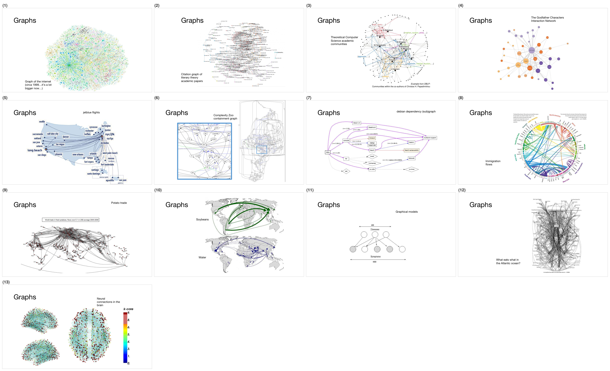
예를 늘어놓은 뒤 슬라이드는 이렇게 정리합니다.
- 그래프는 아주 많습니다.
- 우리는 그래프에 대한 질문에 답하고 싶습니다.
- 효율적인 경로 찾기(efficient routing)?
- 커뮤니티 탐지·군집화(community detection/clustering)?
- 예습 문제(pre-lecture exercise)에서 나온 것들:
- 베이컨 수(Bacon number) 계산하기
- 선수 과목 제약을 어기지 않고 수강 신청하기
- 서로 싸우지 않도록 물고기를 어항에 나누어 넣기
- 이것이 앞으로 몇 차례의 강의에서 할 일입니다.
세 예습 문제는 이번 강의의 세 응용에 하나씩 대응합니다. 선수 과목 문제는 §1.10의 위상 정렬로, 베이컨 수는 §2.7–2.8의 최단 경로로, 물고기 문제는 §2.9의 이분 그래프 판정으로 풀립니다.
0.2 무향 그래프 (Undirected Graphs)
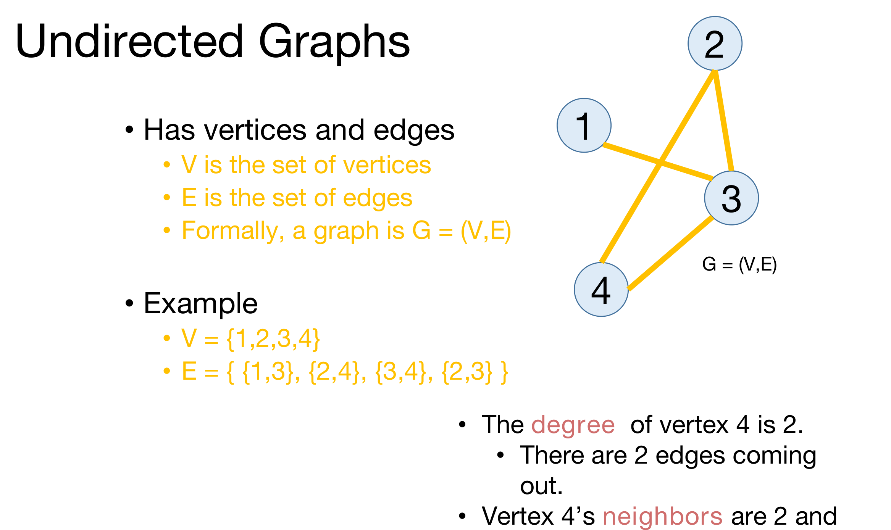
- 그래프는 정점(vertex)과 간선(edge)으로 이루어집니다.
- \(V\)는 정점의 집합, \(E\)는 간선의 집합이고, 형식적으로 그래프는 \(G = (V, E)\)입니다.
- 예: \(V = \{1,2,3,4\}\), \(E = \{\{1,3\}, \{2,4\}, \{3,4\}, \{2,3\}\}\)
- 정점 4의 차수(degree)는 2입니다. 4에서 나가는 간선이 2개 있습니다.
- 정점 4의 이웃(neighbor)은 2와 3입니다.
간선을 중괄호 \(\{u, v\}\)로 쓰는 것은 순서가 없는 쌍이라는 뜻입니다. 이 강의의 슬라이드는 정점(vertex)과 노드(node)를 같은 뜻으로 섞어 쓰며, 본 포스트도 그래프에서는 주로 정점, 트리에서는 노드라고 부르겠습니다.
0.3 유향 그래프 (Directed Graphs)
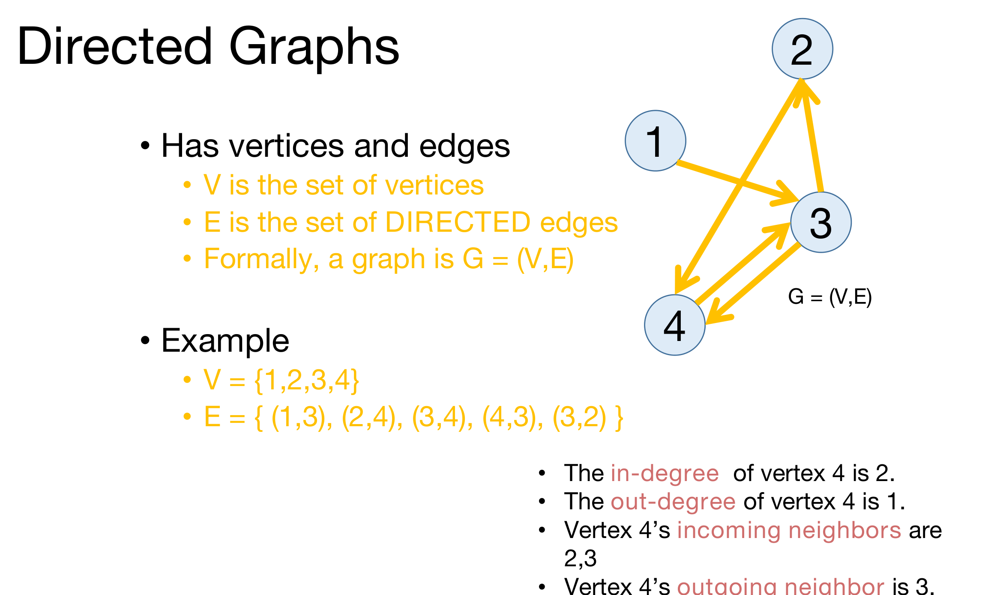
- \(E\)는 방향 있는 간선의 집합입니다.
- 예: \(V = \{1,2,3,4\}\), \(E = \{(1,3), (2,4), (3,4), (4,3), (3,2)\}\)
- 정점 4의 진입 차수(in-degree)는 2, 진출 차수(out-degree)는 1입니다.
- 정점 4의 들어오는 이웃은 2와 3이고, 나가는 이웃은 3입니다.
그래프(graph) \(G = (V, E)\)는 정점(vertex)의 집합 \(V\)와 간선(edge)의 집합 \(E\)로 이루어집니다.
- 무향 그래프(undirected graph): 간선은 순서 없는 쌍 \(\{u, v\}\)입니다. 정점 \(v\)에 붙은 간선의 수를 차수(degree) \(\deg(v)\)라 하고, \(v\)와 간선으로 이어진 정점들을 \(v\)의 이웃(neighbor)이라 합니다.
- 유향 그래프(directed graph): 간선은 순서 있는 쌍 \((u, v)\), 곧 \(u\)에서 \(v\)로 가는 화살표입니다. \(v\)로 들어오는 간선의 수가 진입 차수(in-degree), \(v\)에서 나가는 간선의 수가 진출 차수(out-degree)이고, 이웃도 들어오는 이웃과 나가는 이웃으로 나뉩니다.
이 강의는 정점의 수를 \(n\), 간선의 수를 \(m\)으로 씁니다.
0.4 그래프를 어떻게 표현할까요 (How Do We Represent Graphs?)
그래프를 컴퓨터에 저장하는 방법으로 슬라이드는 두 가지를 듭니다.
선택지 1: 인접 행렬 (Option 1: Adjacency Matrix)
인접 행렬(adjacency matrix)은 \(n \times n\) 행렬로, \(i\)행 \(j\)열의 값이 1이면 \(i\)에서 \(j\)로 가는 간선이 있고 0이면 없다는 뜻입니다.
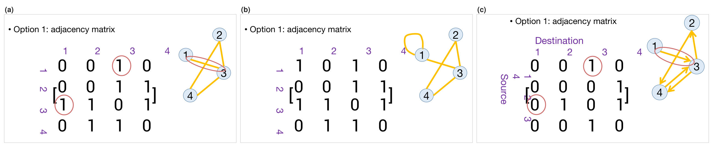
그림의 (a)와 (c)를 옮겨 적으면 다음과 같습니다.
\[ A_{\text{무향}} = \begin{bmatrix} 0&0&1&0\\ 0&0&1&1\\ 1&1&0&1\\ 0&1&1&0 \end{bmatrix}, \qquad A_{\text{유향}} = \begin{bmatrix} 0&0&1&0\\ 0&0&0&1\\ 0&1&0&1\\ 0&0&1&0 \end{bmatrix} \]
- 무향 그래프에서는 간선 \(\{i, j\}\)가 \(A[i][j]\)와 \(A[j][i]\) 두 칸을 모두 1로 만들므로 행렬이 대칭입니다.
- 유향 그래프에서는 간선 \((i, j)\)가 \(A[i][j]\) 한 칸만 1로 만듭니다. 예에서 3번 행이
0 1 0 1인 것은 3에서 나가는 간선이 \((3,2)\)와 \((3,4)\)이기 때문입니다. - (b)처럼 자기 자신으로 가는 간선은 대각선의 칸 \(A[i][i]\)에 기록됩니다.
선택지 2: 인접 리스트 (Option 2: Adjacency Lists)
인접 리스트(adjacency list)는 정점마다 그 정점의 이웃 목록을 하나씩 들고 있는 표현입니다.
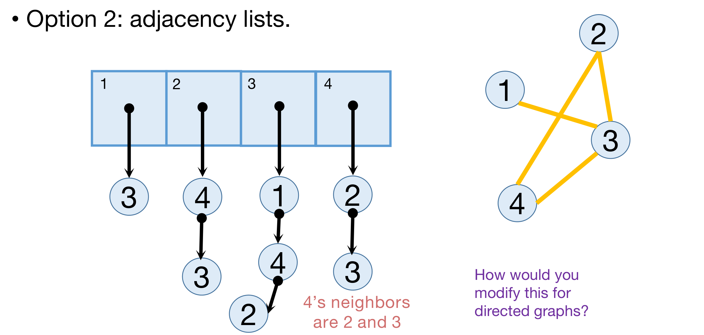
슬라이드가 남긴 질문 — 유향 그래프라면 어떻게 고칠까 — 에 대한 표준적인 답은 각 정점의 리스트에 나가는 이웃만 적는 것입니다. 그러면 간선 \((u,v)\)는 \(u\)의 리스트에 한 번만 나타납니다. 들어오는 이웃도 빨리 알아야 한다면 정점마다 들어오는 이웃의 리스트를 하나 더 둡니다.
0.5 어느 쪽이든 (In Either Case)
어느 표현을 쓰든 다음은 공통입니다.
- 정점은 다른 정보도 담을 수 있습니다.
- 속성(attribute) — 이름, IP 주소 등
- 그래프 위에서 돌릴 알고리즘을 위한 보조 정보 — 뒤에서 볼 방문 상태, 시작·종료 시각이 바로 이것입니다.
- 다음 두 연산을 할 수 있어야 합니다.
- 간선 소속 질의(edge membership): 간선 \(e\)가 \(E\)에 있는가?
- 이웃 질의(neighbor query): 정점 \(v\)의 이웃은 무엇인가?
0.6 절충 (Trade-offs)
정점이 \(n\)개, 간선이 \(m\)개라고 할 때 두 표현의 비용은 다음과 같습니다.
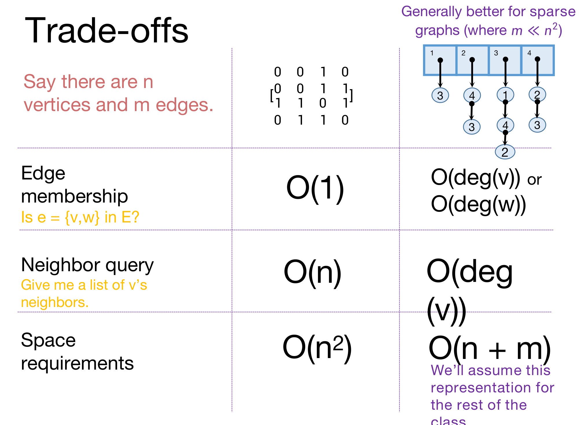
| 인접 행렬 | 인접 리스트 | |
|---|---|---|
| 간선 소속 질의 — \(e = \{v, w\}\)가 \(E\)에 있는가? | \(O(1)\) | \(O(\deg(v))\) 또는 \(O(\deg(w))\) |
| 이웃 질의 — \(v\)의 이웃 목록을 달라 | \(O(n)\) | \(O(\deg(v))\) |
| 공간 | \(O(n^2)\) | \(O(n + m)\) |
각 칸이 왜 그런 값인지 풀어 보겠습니다.
- 인접 행렬
- 간선 소속은 \(A[v][w]\) 한 칸을 읽으면 되므로 \(O(1)\)입니다.
- 이웃 질의는 \(v\)의 행 \(n\)칸을 모두 훑어야 합니다. 이웃이 하나뿐이어도 \(O(n)\)입니다.
- 공간은 간선의 수와 무관하게 \(n^2\)칸입니다.
- 인접 리스트
- 간선 소속은 \(v\)의 리스트에서 \(w\)를 찾거나 \(w\)의 리스트에서 \(v\)를 찾아야 하므로, 둘 중 짧은 쪽을 골라도 그 길이만큼 걸립니다.
- 이웃 질의는 \(v\)의 리스트를 따라가며 읽으면 되므로 \(O(\deg(v))\)입니다.
- 공간은 배열 \(n\)칸에 리스트 원소들을 더한 것입니다.
인접 리스트의 공간이 \(O(n+m)\)인 이유는 한 줄로 확인할 수 있습니다. 무향 그래프에서 리스트 원소의 수는 모든 정점의 차수를 더한 것이고, 간선 하나가 양 끝점의 차수를 1씩 올리므로 그 합은 간선 수의 두 배입니다.
\[\sum_{v \in V} \deg(v) \;=\; 2m\]
따라서 공간은 \(n + 2m = O(n+m)\)입니다. 이 등식은 §1.8의 수행 시간 분석에서 다시 쓰입니다.
단순한 무향 그래프에서 간선은 많아야 \(\binom{n}{2} = \frac{n(n-1)}{2}\)개이므로 \(m = O(n^2)\)입니다. 간선이 그보다 훨씬 적은 희소 그래프(sparse graph) — \(m \ll n^2\) — 에서는 \(O(n+m)\)짜리 공간이 \(O(n^2)\)보다 훨씬 작습니다.
더 중요한 것은 이웃 질의입니다. 뒤에서 볼 DFS와 BFS는 모든 정점에서 이웃을 한 번씩 훑는데, 인접 리스트에서는 그 비용이 차수의 합 \(2m\)에 비례하고 인접 행렬에서는 정점마다 \(n\)칸, 모두 \(n^2\)칸에 비례합니다. 두 탐색의 \(O(n+m)\)이라는 수행 시간은 인접 리스트를 전제로 한 것입니다.
Part 1. 깊이 우선 탐색 (Depth-First Search)
1.1 그래프를 어떻게 탐색할까요 (How Do We Explore a Graph?)
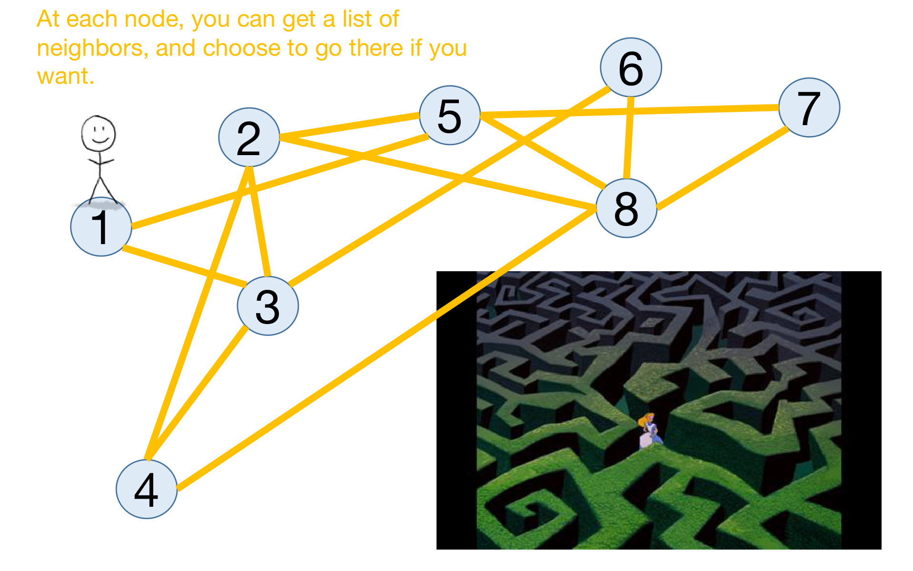
탐색 알고리즘이 쓸 수 있는 연산은 §0.5의 이웃 질의 하나뿐입니다 — 지금 있는 노드에서 이웃의 목록을 얻고, 원하면 그중 하나로 갑니다. 문제는 같은 곳을 맴돌지 않으면서 빠뜨리는 곳 없이 도는 방법입니다.
1.2 분필과 실로 미로 탐색하기 (Exploring a Labyrinth with Chalk and a Piece of String)
슬라이드는 DFS를 분필과 실 한 가닥을 들고 미로를 탐험하는 일에 빗댑니다. 탐험가는 정점을 세 가지 상태로 구분합니다.
| 색 | 상태 | 슬라이드의 설명 |
|---|---|---|
| 연한 파랑 | 미방문 | 아직 가 보지 않았다 (Not been there yet) |
| 초록 | 진행 중 | 가 보았지만, 나가는 길을 다 살피지 못했다 (Been there, haven’t explored all the paths out) |
| 진한 파랑 | 완료 | 가 보았고, 나가는 길을 모두 살폈다 (Been there, have explored all the paths out) |
슬라이드는 부제에서 분필과 실을 언급할 뿐 각각의 역할을 따로 적지는 않지만, 그림에 비추어 읽으면 역할이 분명합니다. 분필은 가 본 곳에 표시를 남기는 도구이고(정점의 색), 실은 시작점에서 지금 있는 곳까지 풀어 놓아 되돌아갈 길을 알려 주는 도구입니다(붉은 간선).
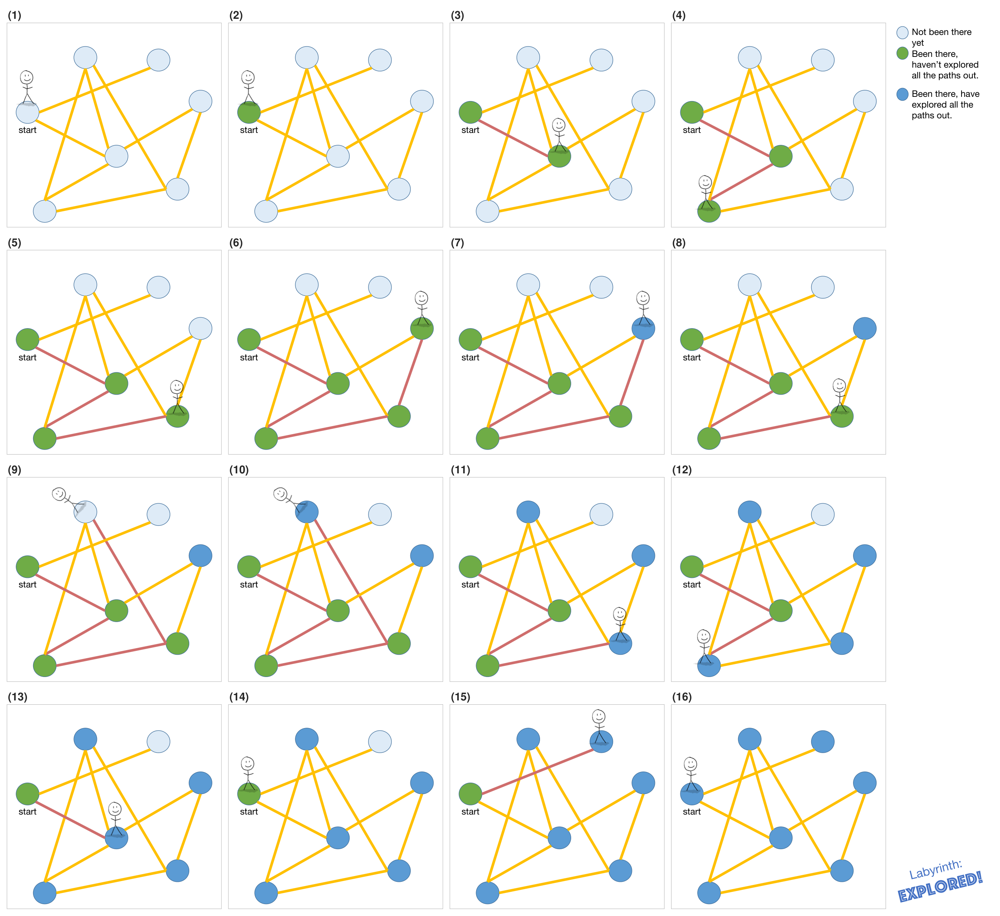
A(1–2)에서 가운데 B(3), 왼쪽 아래 C(4), 오른쪽 아래 G(5), 오른쪽 F(6)로 계속 새 정점을 찾아 들어갑니다. F의 이웃은 모두 가 본 곳이므로 F를 완료로 칠하고(7) G로 물러나(8) 남은 길로 맨 위 D에 갔다가(9) 역시 막다른 곳임을 확인합니다(10). 이후 G(11), C(12), B(13)를 차례로 완료하며 A까지 되돌아오고(14), 남아 있던 이웃 E를 들른 뒤(15) A마저 완료합니다(16). 오른쪽 아래 파란 글씨대로 미로 탐험이 끝났습니다. 갈 수 있는 한 깊이 들어가고, 막히면 가장 최근의 갈림길로 되돌아간다는 것이 이 그림 전체의 요점입니다.열여섯 장면에서 읽어 낼 수 있는 규칙은 다음과 같습니다.
- 새 정점을 찾으면 곧바로 그리로 들어갑니다. 탐험가는
A → B → C → G → F까지 한 번도 물러서지 않고 다섯 정점을 연달아 방문합니다. - 막히면 가장 최근의 갈림길로 돌아갑니다.
F에서 더 갈 곳이 없자 시작점이 아니라 바로 앞의G로 물러나고,G에 아직 살피지 않은 길(D)이 있으므로 그리로 갑니다. - 모든 정점의 색은 연한 파랑 → 초록 → 진한 파랑 순서로 한 번씩만 바뀝니다. 되돌아가는 일은 없습니다.
- 초록 정점들은 언제나 한 줄로 이어져 있습니다. 어느 장면에서든 초록 정점들은 시작점에서 탐험가가 있는 곳까지의 경로를 이루며, 붉은 실이 놓인 길이 바로 그 경로입니다.
1.3 의사코드로 미로 탐색하기 (Exploring a Labyrinth with Pseudocode)
이제 같은 일을 의사코드로 옮깁니다. 각 정점은 두 종류의 정보를 기록합니다.
- 각 정점은 자신의 상태를 기록합니다.
- 미방문 (Unvisited)
- 진행 중 (In progress)
- 완료 (All done)
- 각 정점은 두 개의 시각도 기록합니다.
- 처음 들어온 시각 — 시작 시각
- 그 정점을 마치고 완료로 표시한 시각 — 종료 시각
슬라이드는 단서를 하나 답니다 — DFS를 구현하는 다른 방법을 본 적이 있을 수 있습니다. 이 방식은 장부 정리(bookkeeping)가 더 많은데, 그 장부가 나중에 쓸모 있습니다! 시각을 적어 두는 수고의 값어치는 §1.10의 위상 정렬에서 드러납니다.
DFS(w, currentTime):
w.startTime = currentTime # w에 처음 들어온 시각
currentTime += 1
Mark w as in progress. # 초록: 가 보았지만 아직 다 살피지 못함
for v in w.neighbors:
if v is unvisited: # 아직 가 보지 않은 이웃만 새로 방문
currentTime = DFS(v, currentTime) # v 아래를 다 살피고, 끝난 시각을 돌려받음
currentTime += 1
w.finishTime = currentTime # w에서 나가는 길을 모두 살핀 시각
Mark w as all done # 진한 파랑: 완료
return currentTime비유와 코드의 대응은 다음과 같습니다.
- 분필은 정점에 기록하는 상태 표시입니다.
if v is unvisited검사 덕분에 한 번 칠한 정점에는 다시 들어가지 않습니다. - 실은 재귀 호출의 스택입니다.
DFS(v, …)가 끝나 반환하면 실행이 자동으로w의for루프로 돌아오는데, 이것이 실을 따라 직전 갈림길로 되돌아가는 일입니다. - 시계
currentTime은 인자로 넘기고 반환값으로 돌려받습니다. 시각을 하나 기록할 때마다 1씩 올리므로, 모든 시작 시각과 종료 시각은 서로 다른 값이 됩니다.
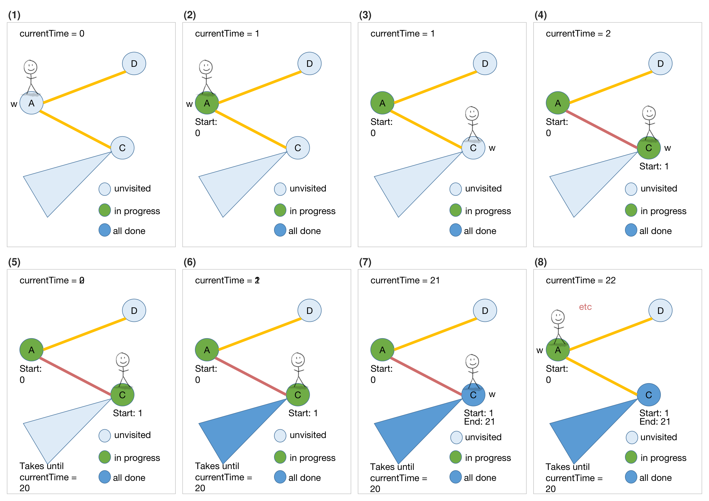
DFS(w, currentTime)가 시각을 어떻게 기록하는지를 따라갑니다. 원본 슬라이드는 오른쪽에 의사코드를 함께 싣고 있는데, 여기서는 그래프 쪽만 잘라 모았고 의사코드는 본문에 옮겼습니다. 그래프는 A가 D와 C에 이어져 있고 C 아래에 삼각형으로 그린 커다란 서브트리가 달린 모양이며, 범례의 세 색이 미방문, 진행 중, 완료입니다. 각 장면 위의 currentTime이 시계의 현재 값이고, 글자 w는 지금 실행 중인 호출의 인자를 가리킵니다. (1) 시계가 0일 때 A에서 시작해, (2) A의 시작 시각을 0으로 적고 시계를 1로 올리며 A를 초록으로 칠합니다. (3) 미방문 이웃 C로 재귀 호출이 넘어가고, (4) C의 시작 시각이 1, 시계는 2가 되며 간선 A–C가 붉게 바뀝니다. (5) C 아래 서브트리를 모두 탐색하는 데 시계가 20이 될 때까지 걸리고, (6) 서브트리가 진한 파랑으로 바뀐 뒤 시계는 21, (7) C의 종료 시각이 21로 적히며 C가 진한 파랑이 됩니다. (8) 호출이 A로 돌아오면 시계는 22이고, 붉은 글씨 etc가 말하듯 남은 이웃 D에 대해 같은 일이 이어집니다. 원본 PDF에서 (5)와 (6)의 시계 값은 두 자리 숫자가 한 자리에 겹쳐 인쇄되어 있는데, 각각 20과 21입니다.| 장면 | currentTime |
w |
일어난 일 |
|---|---|---|---|
| (1) | 0 | A |
DFS(A, 0) 호출 직후. 모든 정점이 미방문 |
| (2) | 1 | A |
A.startTime = 0을 적고 시계를 1로 올린 뒤, A를 진행 중으로 표시 |
| (3) | 1 | C |
A의 이웃 C가 미방문이므로 DFS(C, 1) 호출 |
| (4) | 2 | C |
C.startTime = 1을 적고 시계를 2로 올린 뒤, C를 진행 중으로 표시 |
| (5) | 20 | C 아래의 서브트리를 재귀적으로 탐색 — 시계가 20이 될 때까지 걸림 |
|
| (6) | 21 | 서브트리가 모두 완료됨. 마지막 재귀 호출에서 돌아와 currentTime += 1 |
|
| (7) | 21 | C |
C.finishTime = 21을 적고 C를 완료로 표시, 21을 반환 |
| (8) | 22 | A |
A의 루프로 돌아와 currentTime += 1. 다음 이웃 D의 차례 |
슬라이드는 C 아래 서브트리의 모양을 정하지 않고 삼각형으로만 그렸으므로, 20이라는 값은 그 아래를 다 도는 데 한참 걸린다는 것을 나타내는 예시 값입니다. 중요한 것은 값 자체가 아니라 C의 시작 시각(1)과 종료 시각(21) 사이에 C 아래 모든 정점의 시작과 종료가 들어 있다는 구조입니다.
1.4 DFS를 쓰는 방법은 이것만이 아닙니다 (This Is Not the Only Way to Write DFS!)
- 스택(stack)을 쓰는 반복문 버전이 강의 노트에 있습니다. 그래프가 크고 스택 오버플로(stack overflow)가 걱정된다면 그 버전을 쓰라고 합니다.
- (아니면 어떻게 하는지 스스로 알아내 보라고 덧붙입니다!)
재귀 버전에서는 되돌아갈 길을 함수 호출 스택이 기억합니다. 정점이 한 줄로 길게 이어진 그래프에서는 재귀가 \(n\)단계까지 깊어지므로 호출 스택이 넘칠 수 있고, 그 기억을 프로그램이 직접 관리하는 스택으로 옮긴 것이 반복문 버전입니다.
1.5 DFS는 시작점에서 도달 가능한 모든 노드를 찾습니다 (DFS Finds All the Nodes Reachable from the Starting Point)
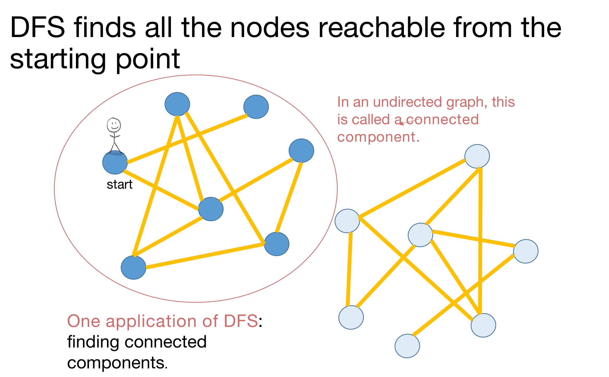
- DFS는 시작점에서 도달 가능한 모든 정점을 찾습니다.
- 무향 그래프에서는 그렇게 찾은 정점들의 덩어리를 연결 요소(connected component)라고 부릅니다.
- 그래서 DFS의 한 가지 응용은 연결 요소를 찾는 것입니다.
DFS가 도달 가능한 정점을 하나도 빠뜨리지 않는 이유는 완료의 뜻에 있습니다. 정점을 완료로 칠한다는 것은 그 정점의 이웃을 모두 확인했다는 뜻이므로, 완료된 정점의 이웃 가운데 미방문으로 남은 것은 없습니다. 시작점에서 어떤 정점까지 경로가 있다면 그 경로를 따라 한 칸씩 이 논리를 적용해 끝 정점도 방문되었음을 알 수 있습니다.
1.6 그래프 전체를 탐색하려면 (To Explore the Whole Graph)
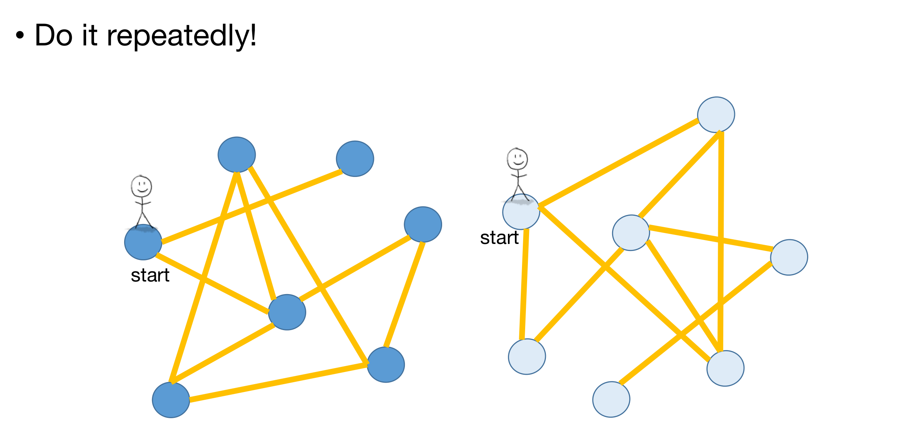
start라고 적혀 있습니다. 오른쪽 연결 요소는 아직 모든 정점이 연한 파랑인데, 그중 하나에 막대 인간이 새로 올라서 있고 거기에도 start가 적혀 있습니다. 한 번의 DFS가 끝났는데도 미방문 정점이 남아 있으면 그중 하나를 새 시작점으로 골라 DFS를 다시 부르고, 미방문 정점이 없어질 때까지 이를 되풀이한다는 뜻입니다.- 반복해서 하면 됩니다!
- 정점을 하나씩 훑으면서, 미방문 정점을 만날 때마다 거기서 DFS를 새로 시작합니다.
- DFS를 새로 시작한 횟수가 곧 연결 요소의 수입니다.
1.7 왜 깊이 우선이라고 부를까요 (Why Is It Called Depth-First?)
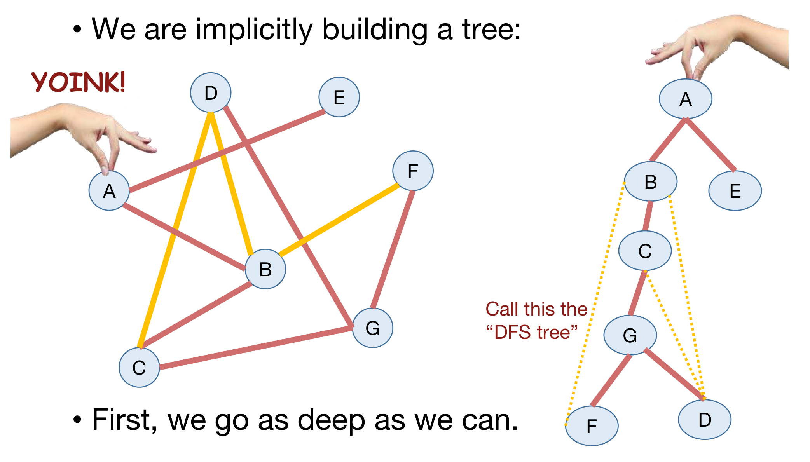
A–G의 이름을 붙인 것으로, 붉은 간선 여섯 개(A–B, B–C, C–G, G–F, G–D, A–E)가 탐험가가 새 정점을 처음 찾아 들어갈 때 지나간 간선이고, 노란 간선 세 개(D–C, D–B, B–F)는 한 번도 그렇게 쓰이지 않은 간선입니다. 손이 시작점 A를 집어 올리면 붉은 간선들에 매달려 나머지 정점이 아래로 늘어지고, 그 모양이 오른쪽의 트리입니다(붉은 글씨 YOINK!는 낚아채는 동작을 나타내는 감탄사입니다). A 아래에 B와 E가 있고, B 아래로 C, G가 한 줄로 이어지며, G 아래에 F와 D가 달립니다. 오른쪽의 노란 점선은 트리에 들지 못한 세 간선으로, 셋 모두 어떤 정점과 그 조상을 잇고 있습니다 — F와 B, D와 B, D와 C입니다. 붉은 글씨는 이 트리를 DFS 트리라 부르자고 하고, 아래 글이 이름의 유래를 말합니다 — 먼저, 갈 수 있는 한 깊이 간다. 실제로 트리의 가장 긴 가지 A–B–C–G–F는 간선 네 개짜리입니다.- 우리는 암묵적으로 트리를 짓고 있습니다.
DFS(w)가 미방문 이웃v를 발견해DFS(v)를 부를 때마다,v를w의 자식으로 매답니다.- 이렇게 생긴 트리를 DFS 트리라고 부릅니다.
- 먼저, 갈 수 있는 한 깊이 갑니다. 그래서 깊이 우선입니다.
7강에서 쓴 후손(descendant)이라는 말을 여기서도 씁니다. DFS 트리에서 v가 w의 후손이라는 것은, DFS(w)가 실행되는 동안 그 안에서 (직접 또는 여러 단계를 거쳐) DFS(v)가 불렸다는 뜻입니다. 이 트리는 §1.10의 증명에서 핵심 도구로 쓰입니다.
1.8 수행 시간 (Running Time)
시작한 연결 요소만 탐색할 때 (To Explore Just the Connected Component We Started In)
슬라이드는 먼저 직관부터 말합니다.
- 우리는 각 간선을 많아야 두 번 봅니다.
- 양 끝점에서 한 번씩입니다.
- 그리고 기본적으로, 그 밖의 일은 하지 않습니다.
- 그러므로… \(O(m)\)
다음 슬라이드가 이것을 계산으로 확인합니다.
- \(G\)가 연결 리스트 형식, 곧 인접 리스트로 주어진다고 가정합니다.
- \(C = (V', E')\)가 연결 요소라고 합시다.
- \(V'\)의 각 정점을 정확히 한 번 방문합니다.
- 여기서 “방문한다”는 “그 정점에 대해 DFS를 호출한다”는 뜻입니다.
- 각 정점 \(w\)에서 하는 일은 다음과 같습니다.
- 장부 정리: \(O(1)\)
- \(w\)의 이웃을 훑으며 방문 여부를 확인하고 (필요하면 재귀 호출을 하는 일): 이웃 하나당 \(O(1)\), 모두 합쳐 \(O(\deg(w))\)
- 전체 시간:
\[ \sum_{w \in V'} \bigl(O(\deg(w)) + O(1)\bigr) \;=\; O(|E'| + |V'|) \;=\; O(|E'|) \]
슬라이드가 한 줄로 적은 두 등호를 풀어 보겠습니다.
- 첫째 등호. 합을 두 항으로 나누고 §0.6의 등식 \(\sum \deg(w) = 2|E'|\)를 씁니다.
\[ \sum_{w \in V'} O(\deg(w)) + \sum_{w \in V'} O(1) \;=\; O\Bigl(\sum_{w \in V'} \deg(w)\Bigr) + O(|V'|) \;=\; O(2|E'|) + O(|V'|) \;=\; O(|E'| + |V'|) \]
- 둘째 등호. 슬라이드의 붉은 주석대로 연결된 그래프에서는 \(|V'| \le |E'| + 1\)입니다. 정점 \(|V'|\)개를 하나로 이으려면 간선이 적어도 \(|V'| - 1\)개 필요하기 때문입니다. 따라서 \(|V'|\) 항은 \(|E'|\) 항에 흡수됩니다.
여기서 “각 정점을 정확히 한 번 방문한다”가 분석의 핵심입니다. 재귀 호출은 미방문 정점에 대해서만 일어나고, 호출되자마자 그 정점을 진행 중으로 칠하므로, 같은 정점에 대한 호출은 두 번 일어나지 않습니다.
그래프 전체를 탐색할 때 (To Explore the Whole Graph)
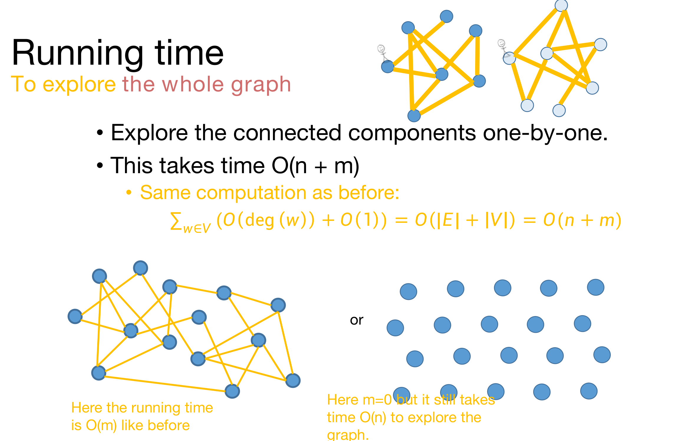
or는 둘 중 어느 쪽 그래프가 주어질지 모른다는 뜻이고, 오른쪽 아래 노란 문장은 원본 슬라이드에서도 정점 그림과 겹치고 끝이 잘려 있습니다.- 연결 요소를 하나씩 탐색합니다.
- 이것은 \(O(n + m)\) 시간이 걸립니다.
- 앞에서와 같은 계산입니다.
\[ \sum_{w \in V} \bigl(O(\deg(w)) + O(1)\bigr) \;=\; O(|E| + |V|) \;=\; O(n + m) \]
이번에는 \(|V|\) 항을 지울 수 없습니다. 연결 요소 하나 안에서는 \(|V'| \le |E'| + 1\)이 성립했지만, 그래프 전체가 연결되어 있다는 보장은 없기 때문입니다.
- 그래프가 연결되어 있다면 수행 시간은 앞에서처럼 \(O(m)\)입니다.
- 간선이 하나도 없는 그래프에서는 \(m = 0\)이지만, 그래프를 탐색하는 데 여전히 \(O(n)\) 시간이 걸립니다.
1.9 유향 그래프에서도 잘 동작합니다 (DFS Works Fine on Directed Graphs Too!)
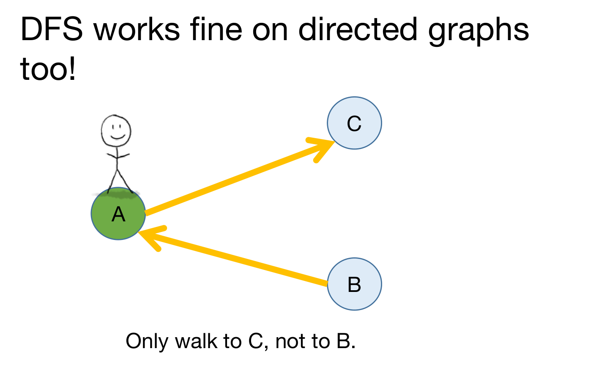
A 위에 서 있고, 간선은 A에서 C로 가는 것과 B에서 A로 들어오는 것 두 개입니다. 아래 글이 규칙을 말합니다 — C로만 걸어가고, B로는 가지 않는다. 유향 그래프에서 탐험가는 화살표를 거슬러 갈 수 없으므로, A에서 볼 때 갈 수 있는 곳은 나가는 간선의 도착점인 C뿐입니다. 의사코드는 한 글자도 바꿀 필요가 없고, w.neighbors를 나가는 이웃의 목록으로 읽기만 하면 됩니다. 원본 슬라이드는 제목 위에 직접 확인해 보라는 뜻의 You check:를 적어 두었는데, 이 그림에서는 잘라 냈습니다.- 슬라이드는 이것을 직접 확인해 보라고 합니다.
- 규칙은 하나입니다 — 나가는 간선만 따라 걷습니다. 그림에서는
C로만 가고B로는 가지 않습니다.
수행 시간 분석도 그대로입니다. 각 정점에서 나가는 이웃을 훑는 비용이 진출 차수에 비례하고, 진출 차수의 합은 간선의 수 \(m\)이므로 전체는 \(O(n+m)\)입니다.
1.10 DFS의 응용: 위상 정렬 (Application of DFS: Topological Sorting)
문제 (The Problem)
- 모든 의존성 요구가 충족되도록 정점들의 순서를 찾습니다.
- 다시 말해, 순서에서 \(v\)가 \(w\)보다 앞에 온다면 \(w\)에서 \(v\)로 가는 간선은 없습니다.
- 의존성 그래프에 순환이 없다고 가정합니다. 곧 유향 비순환 그래프(Directed Acyclic Graph, DAG)입니다.
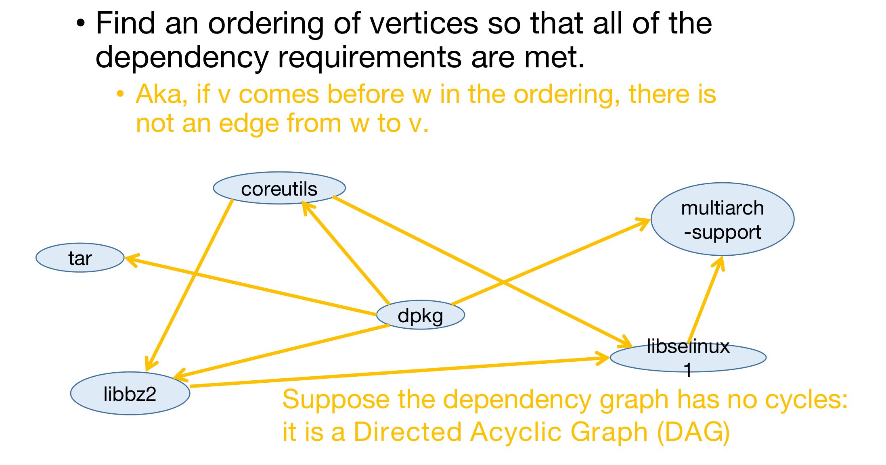
dpkg, coreutils, tar, libbz2, libselinux1, multiarch-support)이고, 노란 화살표 여덟 개가 의존 관계입니다. dpkg에서 coreutils, tar, libbz2, multiarch-support로 네 개, coreutils에서 libbz2와 libselinux1로 두 개, libbz2에서 libselinux1로 하나, libselinux1에서 multiarch-support로 하나입니다. 오른쪽 아래 노란 글씨는 전제를 밝힙니다 — 의존성 그래프에 순환이 없다고 하자. 곧 유향 비순환 그래프(DAG)이다. libselinux1의 이름은 원본 슬라이드에서 타원 밖으로 넘쳐 두 줄로 찍혀 있습니다.순환이 없다는 전제는 없어서는 안 됩니다. \(a \to b \to c \to a\) 같은 순환이 있다면 \(a\)는 \(b\)보다, \(b\)는 \(c\)보다, \(c\)는 다시 \(a\)보다 앞에 와야 하므로, 조건을 만족하는 순서가 애초에 존재하지 않습니다.
눈대중으로는 안 됩니다 (Can’t Always Eyeball It)
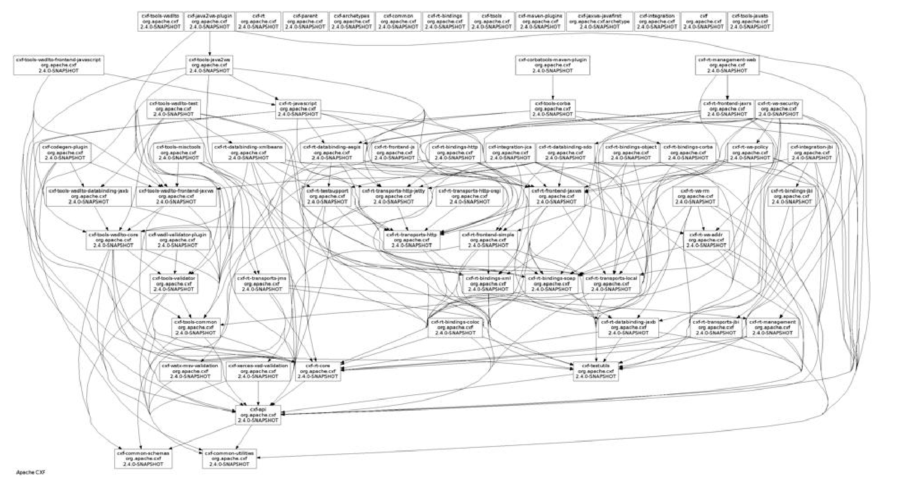
Apache CXF라고 적혀 있고, 상자 하나하나가 모듈, 화살표가 의존 관계입니다. 모듈이 수십 개로 늘어난 것만으로 화살표가 서로 뒤엉켜, 어느 상자를 먼저 놓아야 하는지 눈으로 따라가기가 사실상 불가능합니다. 앞 그림의 여섯 정점짜리 그래프는 손으로도 풀 수 있지만, 실제 문제에서는 정점과 간선의 수에 비례하는 시간에 기계적으로 순서를 찾아 주는 알고리즘이 필요하다는 것이 이 그림의 요점입니다.DFS를 해 봅시다 (Let’s Do DFS)
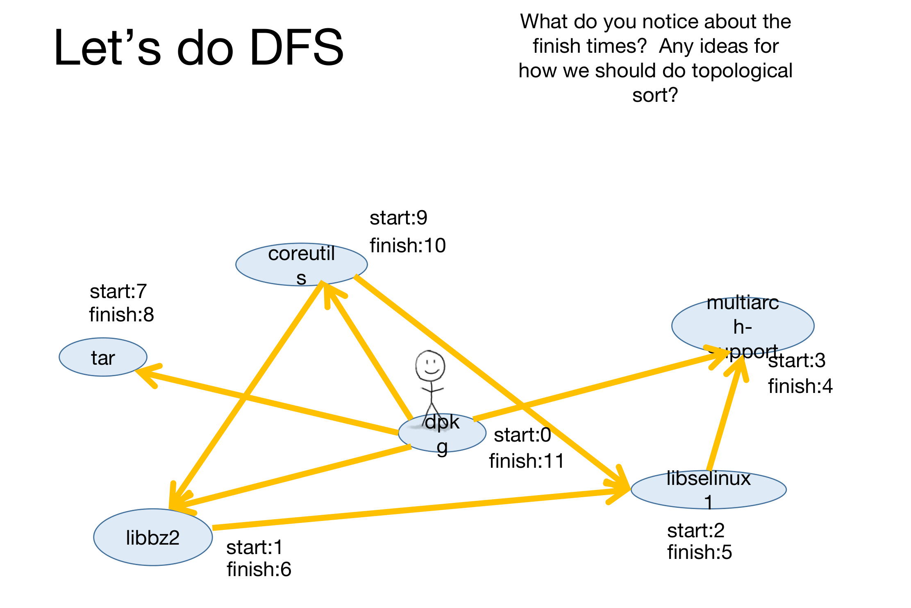
dpkg를 시작점으로 DFS를 실행하고, 각 정점 옆에 시작 시각(start)과 종료 시각(finish)을 적은 그림입니다. 막대 인간이 서 있는 dpkg가 start:0, finish:11이고, 탐색은 libbz2(1, 6), libselinux1(2, 5), multiarch-support(3, 4)로 깊이 들어갔다가 되돌아와 tar(7, 8), coreutils(9, 10)를 차례로 들릅니다. 오른쪽 위 글이 질문을 던집니다 — 종료 시각에서 무엇을 알아챌 수 있는가? 위상 정렬을 어떻게 해야 할지 아이디어가 있는가? 화살표 여덟 개를 하나씩 확인하면 예외 없이 화살표가 나가는 쪽의 종료 시각이 들어가는 쪽보다 큽니다. 원본 슬라이드에서 coreutils, dpkg, multiarch-support의 이름은 타원 안에서 줄바꿈되어 글자가 겹쳐 있습니다.§1.3의 의사코드를 이 그래프에 그대로 실행하면 그림의 값이 나옵니다.
| 패키지 | 시작 시각 | 종료 시각 | 호출된 곳 |
|---|---|---|---|
dpkg |
0 | 11 | 시작점 |
libbz2 |
1 | 6 | dpkg의 이웃 |
libselinux1 |
2 | 5 | libbz2의 이웃 |
multiarch-support |
3 | 4 | libselinux1의 이웃 |
tar |
7 | 8 | dpkg의 이웃 |
coreutils |
9 | 10 | dpkg의 이웃 |
coreutils는libbz2와libselinux1로 가는 간선을 갖고 있지만, 시각 9에coreutils에 도착했을 때 둘은 이미 완료된 뒤여서 재귀 호출이 일어나지 않습니다. 그래서 곧바로 10에 끝납니다.- 슬라이드의 질문에 답해 보면, 시작 시각은 간선의 방향과 아무 규칙 없이 섞여 있습니다. 간선
coreutils → libbz2는 시작 시각 9에서 1로 가지만, 간선dpkg → libbz2는 0에서 1로 갑니다. - 반면 종료 시각은 여덟 간선 모두에서 출발점 쪽이 더 큽니다.
종료 시각이 쓸모 있어 보입니다 (Finish Times Seem Useful)
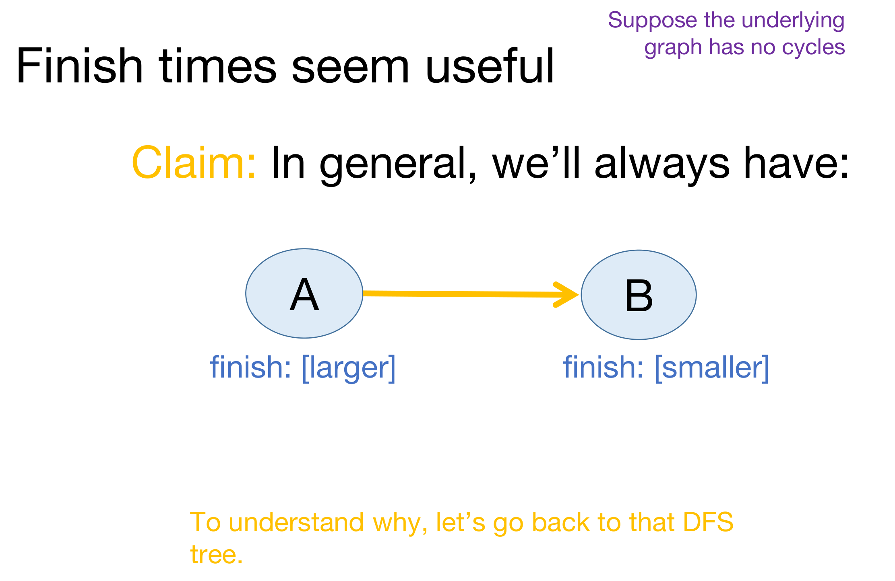
A에서 B로 가는 간선 하나가 그려져 있고, 파란 글씨가 두 정점의 종료 시각을 비교합니다 — A 쪽이 더 크고, B 쪽이 더 작습니다. 노란 글씨 Claim은 이것이 우연이 아니라 일반적으로 언제나 성립한다고 주장하며, 오른쪽 위 보라색 글씨가 전제를 답니다 — 바탕 그래프에 순환이 없다고 하자. 아래 노란 글씨는 증명의 방향을 예고합니다 — 이유를 이해하기 위해 DFS 트리로 돌아가 보자는 것입니다.더 일반적인 명제 (A More General Statement)
증명에 앞서, 순환이 있어도 성립하는 더 일반적인 사실을 하나 세웁니다.
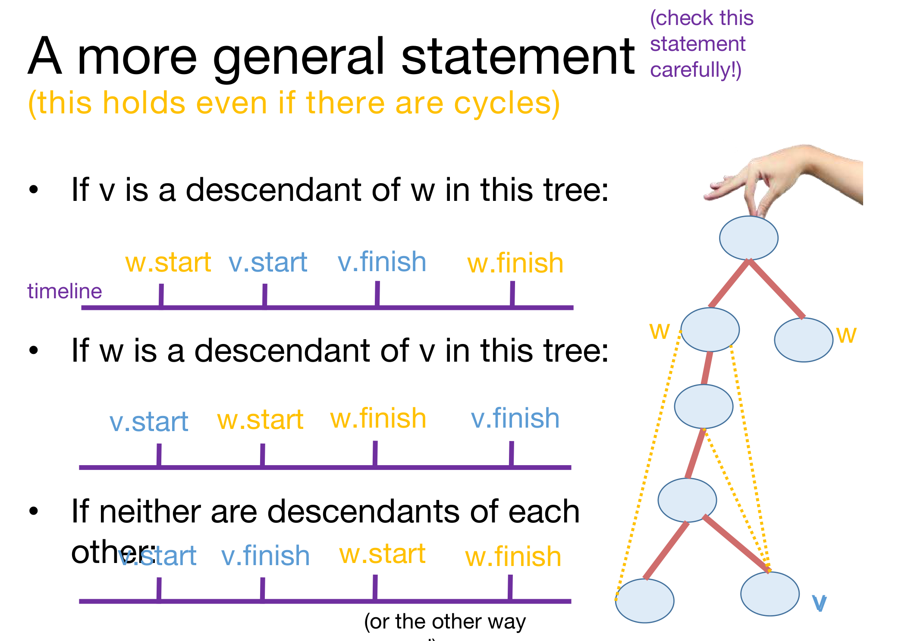
timeline)이고, 그 위의 눈금 네 개가 왼쪽부터 시간 순서대로 찍힌 사건입니다. 첫째 줄은 \(v\)가 \(w\)의 후손인 경우로 w.start, v.start, v.finish, w.finish 순서, 곧 \(v\)의 구간이 \(w\)의 구간 안에 들어 있습니다. 둘째 줄은 반대로 \(w\)가 \(v\)의 후손인 경우로 v.start, w.start, w.finish, v.finish 순서입니다. 셋째 줄은 어느 쪽도 상대의 후손이 아닌 경우로 v.start, v.finish, w.start, w.finish 순서, 곧 두 구간이 겹치지 않으며, 아래 작은 글씨대로 순서가 뒤바뀐 경우도 있습니다(이 글씨는 원본에서 화면 아래로 잘려 있습니다). 오른쪽 트리는 §1.7의 DFS 트리에서 이름을 지운 것으로, 노란 w가 두 군데, 파란 v가 한 군데 붙어 있습니다. 왼쪽 가지의 w는 맨 아래 v의 조상이어서 첫째 줄의 상황이고, 오른쪽 가지의 w는 v와 조상–후손 관계가 없어서 셋째 줄의 상황입니다.| DFS 트리에서의 관계 | 시각의 순서 | 두 구간의 관계 |
|---|---|---|
| \(v\)가 \(w\)의 후손 | \(w.\text{start} < v.\text{start} < v.\text{finish} < w.\text{finish}\) | \(v\)의 구간이 \(w\)의 구간 안에 있다 |
| \(w\)가 \(v\)의 후손 | \(v.\text{start} < w.\text{start} < w.\text{finish} < v.\text{finish}\) | \(w\)의 구간이 \(v\)의 구간 안에 있다 |
| 어느 쪽도 후손이 아님 | \(v.\text{start} < v.\text{finish} < w.\text{start} < w.\text{finish}\) (또는 그 반대) | 두 구간이 겹치지 않는다 |
슬라이드가 주의 깊게 확인해 보라고 한 이 명제는 재귀 호출의 성질에서 나옵니다.
- 정점 \(w\)의 시작 시각부터 종료 시각까지는 정확히 호출
DFS(w)가 실행 중인 기간입니다. - \(v\)가 \(w\)의 후손이라는 것은
DFS(v)가DFS(w)의 실행 도중에 불렸다는 뜻이고, 안쪽 호출은 바깥쪽 호출보다 늦게 시작해 먼저 끝납니다. 그래서 구간이 포함 관계를 이룹니다. - 어느 쪽도 상대의 후손이 아니라면, 한쪽 호출이 실행되는 동안 다른 쪽 호출은 불리지 않았습니다. 두 호출이 일부만 겹치는 일은 재귀에서 일어날 수 없으므로, 한쪽이 완전히 끝난 뒤에야 다른 쪽이 시작됩니다.
두 구간이 어중간하게 걸치는 경우가 없다는 점에서 괄호를 여닫는 규칙과 같고, 표준 교과서(CLRS)는 이 사실을 괄호 정리(parenthesis theorem)라고 부릅니다.
증명 (So to Prove This)
이제 증명할 명제는 다음과 같습니다 — 바탕 그래프에 순환이 없을 때, 간선 \(A \to B\)가 있으면 \(B.\text{finishTime} < A.\text{finishTime}\)이다. DFS 트리에서 \(B\)가 \(A\)의 후손인지 아닌지에 따라 두 경우로 나눕니다.
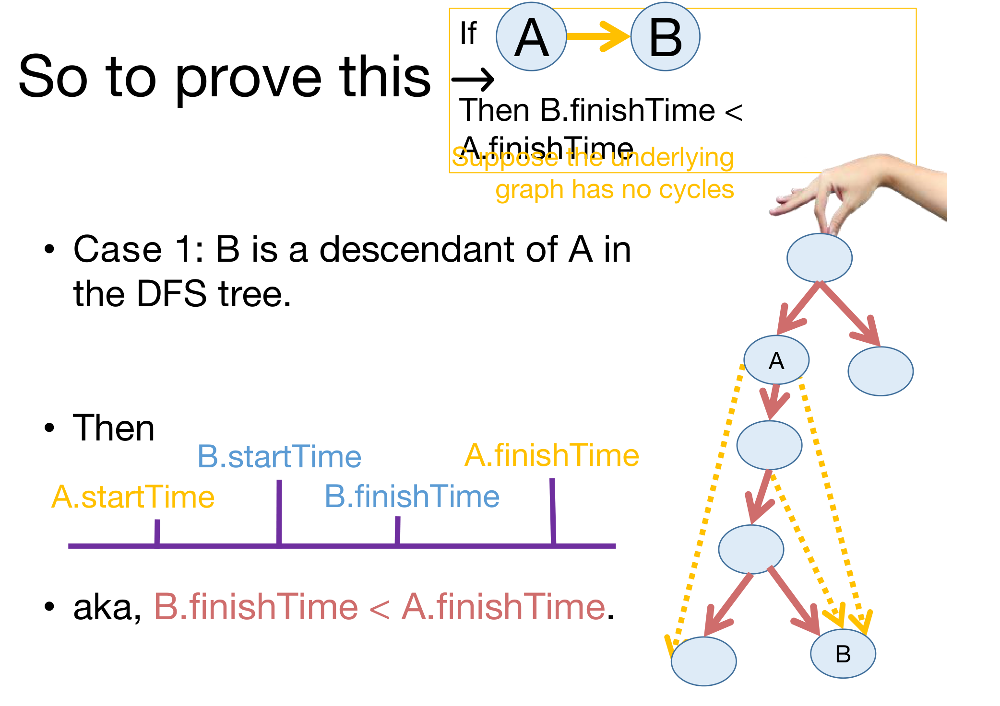
A→B가 있으면 B.finishTime < A.finishTime이고, 그 아래 노란 글씨가 전제(바탕 그래프에 순환이 없다)입니다. 경우 1은 DFS 트리에서 B가 A의 후손인 경우로, 오른쪽 트리에서 A는 왼쪽 가지의 위쪽에, B는 그 아래 맨 끝에 있습니다. 붉은 화살표가 트리 간선이고, 노란 점선 화살표가 트리에 들지 못한 간선이며 그 가운데 A에서 B로 내려가는 것이 문제의 간선입니다. 앞의 일반 명제에 따르면 이때 시간축의 순서는 A.startTime, B.startTime, B.finishTime, A.finishTime이고, 아래 붉은 글씨가 결론을 읽어 줍니다 — 곧 B.finishTime < A.finishTime입니다. 원본 슬라이드에서 노란 상자 안의 글과 전제를 적은 글이 서로 겹쳐 인쇄되어 있습니다.경우 1: \(B\)가 DFS 트리에서 \(A\)의 후손인 경우.
- 일반 명제의 첫째 줄에 \(w = A\), \(v = B\)를 넣으면 다음 순서를 얻습니다.
\[A.\text{startTime} \;<\; B.\text{startTime} \;<\; B.\text{finishTime} \;<\; A.\text{finishTime}\]
- 곧 \(B.\text{finishTime} < A.\text{finishTime}\)입니다.
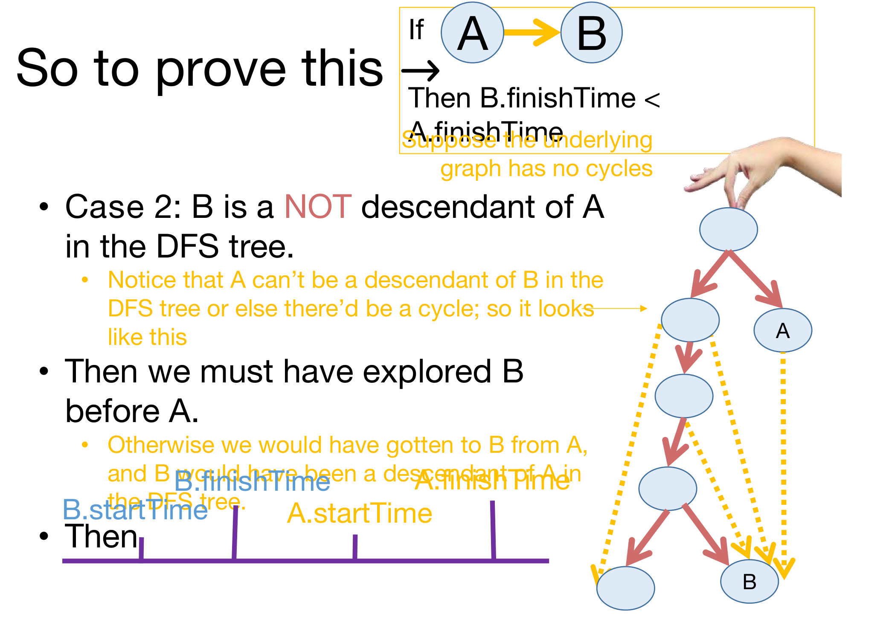
B가 A의 후손이 아닌 경우입니다. 첫 노란 항목이 먼저 짚는 것은 이때 A도 B의 후손일 수 없다는 점입니다. 그렇다면 B에서 A로 내려오는 트리 경로와 간선 A→B가 합쳐 순환을 이루기 때문입니다. 그래서 상황은 오른쪽 트리처럼 A와 B가 서로 다른 가지에 놓인 모양이고, 오른쪽 끝의 노란 점선 화살표가 A에서 B로 가는 간선입니다. 둘째 검은 항목이 핵심입니다 — 그렇다면 B를 A보다 먼저 탐색했어야 한다. 노란 설명대로, 그렇지 않았다면 A에서 B로 건너갔을 것이고 B는 A의 후손이 되었을 것이기 때문입니다. 따라서 아래 시간축의 순서는 B.startTime, B.finishTime, A.startTime, A.finishTime이고, 이 경우에도 B가 먼저 끝납니다. 원본 슬라이드에서 아래쪽 글과 시간축의 글자들이 심하게 겹쳐 인쇄되어 있어, 같은 내용을 본문에 다시 옮겨 적었습니다.경우 2: \(B\)가 DFS 트리에서 \(A\)의 후손이 아닌 경우.
- \(A\)도 \(B\)의 후손일 수 없습니다. 만약 그렇다면 DFS 트리에 \(B\)에서 \(A\)로 내려가는 경로가 있고, 거기에 간선 \(A \to B\)를 붙이면 순환이 되어 전제에 어긋납니다.
- 그러므로 어느 쪽도 상대의 후손이 아니고, 일반 명제의 셋째 줄에 의해 두 구간은 겹치지 않습니다. 남은 질문은 어느 쪽이 먼저인가입니다.
- \(B\)를 \(A\)보다 먼저 탐색했어야 합니다.
- 만약 \(A\)의 구간이 먼저라면, \(A\)가 진행 중인 동안 \(B\)는 아직 미방문입니다.
- 그런데 \(A\)는 완료로 표시되기 전에 이웃을 모두 확인하고, \(B\)는 \(A\)의 이웃입니다. 그러면 \(A\)에서 \(B\)로 건너갔을 것이고, \(B\)는 \(A\)의 후손이 되었을 것입니다. 이는 경우 2의 가정에 어긋납니다.
- 따라서 순서는 다음과 같고, 이 경우에도 \(B.\text{finishTime} < A.\text{finishTime}\)입니다.
\[B.\text{startTime} \;<\; B.\text{finishTime} \;<\; A.\text{startTime} \;<\; A.\text{finishTime}\]
두 경우가 모든 가능성을 덮으므로 증명이 끝났습니다. \(\blacksquare\)
정리 (Theorem)
유향 비순환 그래프에서 DFS를 실행하면, 간선 \(A \to B\)가 있을 때 언제나
\[B.\text{finishTime} \;<\; A.\text{finishTime}\]
입니다. 곧 모든 간선은 종료 시각이 큰 정점에서 작은 정점으로 향합니다.
순환이 없다는 전제가 쓰인 곳은 경우 2의 첫 단계 한 군데입니다. 순환이 있는 그래프에서는 \(A\)가 \(B\)의 후손이면서 간선 \(A \to B\)가 있을 수 있고, 그때는 \(B\)의 구간이 \(A\)의 구간을 감싸므로 \(B\)가 나중에 끝납니다.
위상 정렬로 돌아가서 (Back to Topological Sorting)
- 패키지를 어떤 순서로 설치해야 할까요?
- DFS 종료 시각의 역순으로!
정리에 의해 모든 간선은 종료 시각이 큰 쪽에서 작은 쪽으로 향합니다. 그러므로 정점들을 종료 시각이 큰 것부터 늘어놓으면 모든 간선이 앞에서 뒤로 향하고, 이것이 문제가 요구한 순서입니다. 확인해 보면, 이 순서에서 \(v\)가 \(w\)보다 앞에 있는데 간선 \(w \to v\)가 있다고 합시다. 정리에 의해 \(v.\text{finishTime} < w.\text{finishTime}\)이므로 \(w\)가 \(v\)보다 앞에 있어야 하는데, 이는 가정과 모순입니다.
DAG에서의 위상 정렬 (Topological Sorting (on a DAG))
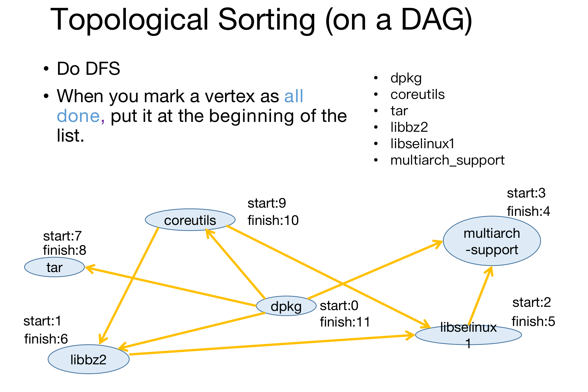
dpkg, coreutils, tar, libbz2, libselinux1, multiarch_support. 종료 시각으로 읽으면 11, 10, 8, 6, 5, 4로 큰 것부터 작은 것 순서입니다. 가장 먼저 끝난 multiarch-support가 가장 먼저 리스트에 들어갔다가 나중에 끝난 정점들에 밀려 맨 뒤로 갔고, 가장 늦게 끝난 dpkg가 맨 앞에 있습니다. 그래프의 화살표 여덟 개가 모두 이 목록에서 앞쪽 정점에서 뒤쪽 정점으로 향한다는 것을 확인할 수 있습니다.- DFS를 합니다.
- 정점을 완료로 표시할 때마다, 그 정점을 리스트의 맨 앞에 넣습니다.
종료 시각을 따로 모아 정렬할 필요가 없다는 점이 요령입니다. 정점은 종료 시각이 빠른 순서로 완료되므로, 완료될 때마다 맨 앞에 끼워 넣으면 리스트는 저절로 종료 시각의 역순이 됩니다.
슬라이드에 적혀 있지는 않지만 두 가지를 덧붙여 둡니다.
- 수행 시간. DFS가 \(O(n+m)\)이고 리스트 맨 앞에 넣는 일은 정점마다 \(O(1)\)이므로, 위상 정렬 전체도 \(O(n+m)\)입니다.
- 그래프 전체. 예제에서는
dpkg하나에서 모든 정점에 닿았지만, 일반적으로는 §1.6처럼 미방문 정점이 남아 있는 동안 DFS를 다시 시작해야 모든 정점이 리스트에 들어갑니다. 이때 시계는 0으로 되돌리지 않고 이어서 씁니다.
슬라이드의 정의가 요구하는 것은 모든 간선이 순서의 앞쪽에서 뒤쪽으로 향한다는 것입니다. 이 순서가 곧 일을 하는 순서인지는 간선을 어떻게 읽느냐에 달려 있습니다.
- 간선 \(u \to v\)를 “\(u\)를 먼저 해야 \(v\)를 할 수 있다”로 읽는다면(예: 선수 과목에서 후속 과목으로), 알고리즘이 내놓은 순서가 그대로 일하는 순서입니다.
- 간선 \(u \to v\)를 “\(u\)가 \(v\)에 의존한다”, 곧 \(v\)가 먼저 준비되어 있어야 한다고 읽는다면, 일하는 순서는 그 역순, 다시 말해 종료 시각이 빠른 순서입니다. 예를 들어 화살표
dpkg → libbz2를 이 뜻으로 읽으면, 실제 설치는 목록의 맨 뒤에 있는multiarch_support부터 거꾸로 해야 합니다.
어느 쪽이든 알고리즘은 같고, 마지막에 리스트를 뒤집느냐만 다릅니다. 문제를 그래프로 옮길 때 화살표가 무엇을 뜻하는지부터 정해 두어야 합니다.
방금 무엇을 배웠나 (What Did We Just Learn?)
- DFS는 위상 정렬 문제를 푸는 데 도움이 됩니다.
- 위상 정렬은 모든 의존성을 지키는 순서를 찾는 문제에 붙은 멋진 이름입니다.
- DFS 트리를 떠올리는 것이 도움이 됩니다.
예시 (Example)
슬라이드는 예시를 하나 더 실어 두었는데, 장마다 이 예시는 수업에서 건너뛰었고 참고용으로 실었다는 주석이 붙어 있습니다.
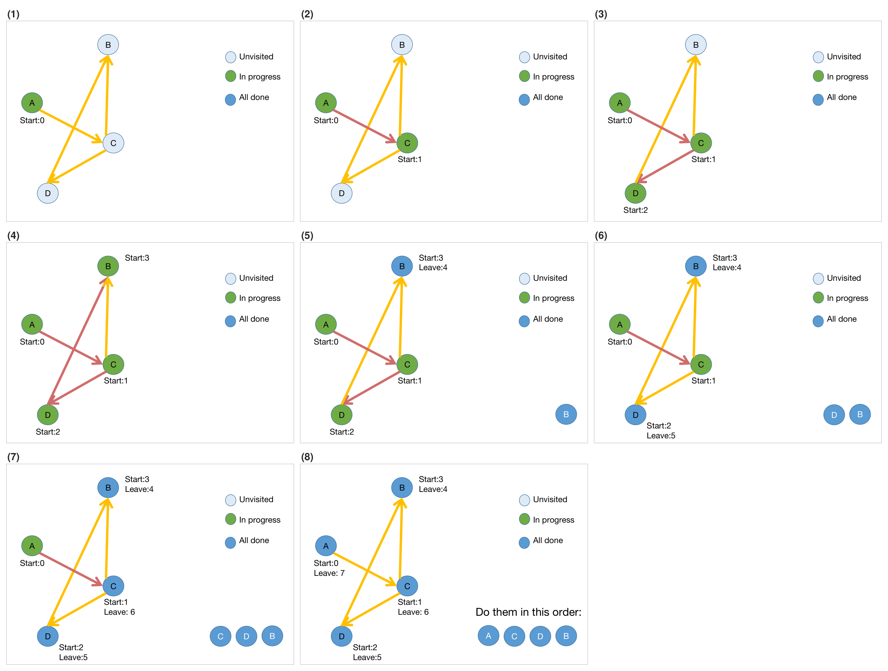
A→C, C→D, C→B, D→B의 네 개이고, 범례의 세 색은 미방문(Unvisited), 진행 중(In progress), 완료(All done)입니다. 붉은 화살표는 지금 재귀 호출이 타고 내려와 있는 간선입니다. (1) A에서 시작해 Start:0, (2) C로 가서 Start:1, (3) D로 가서 Start:2, (4) B로 가서 Start:3을 적습니다. (5) B는 나가는 간선이 없으므로 곧바로 완료되어 Leave:4가 적히고, 오른쪽 아래 리스트에 B가 들어갑니다. (6) D가 Leave:5로 끝나 리스트가 D B, (7) C가 Leave: 6으로 끝나 C D B, (8) A가 Leave: 7로 끝나 A C D B가 됩니다. 마지막 장면의 글이 결론입니다 — 이 순서대로 하라. 이 슬라이드들은 종료 시각을 finish 대신 Leave라고 적고 있습니다.| 정점 | 시작 시각 | 종료 시각 | 완료 직후의 리스트 |
|---|---|---|---|
B |
3 | 4 | B |
D |
2 | 5 | D B |
C |
1 | 6 | C D B |
A |
0 | 7 | A C D B |
결과 A, C, D, B에서 네 간선 A → C, C → D, C → B, D → B는 모두 앞에서 뒤로 향합니다. C의 이웃으로 D와 B가 모두 있지만, D를 먼저 방문하면 B는 D를 거쳐 발견되므로 DFS 트리는 A – C – D – B의 한 줄이 되고, 간선 C → B는 트리에 들지 못합니다.
1.11 이미 본 적 있는 DFS의 또 다른 쓰임 (Another Use of DFS That We’ve Already Seen)
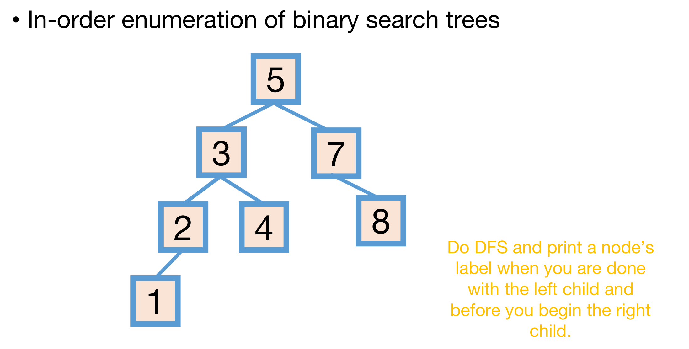
5 아래에 3과 7, 3 아래에 2와 4, 2 아래에 1, 7 아래에 8이 달린 이진 탐색 트리이고, 파란 테두리 상자가 노드, 파란 선이 부모와 자식을 잇는 간선입니다. 오른쪽 아래 노란 글씨가 방법을 말합니다 — DFS를 하되, 왼쪽 자식을 끝낸 뒤 오른쪽 자식을 시작하기 전에 그 노드의 이름을 출력한다. 이렇게 하면 이 트리에서는 1, 2, 3, 4, 5, 7, 8이 정렬된 순서로 출력됩니다. 위상 정렬이 DFS의 종료 시점에 일을 끼워 넣은 것이라면, 중위 순회는 두 재귀 호출 사이에 일을 끼워 넣은 것이라는 점에서 같은 뼈대의 다른 쓰임입니다.- 이진 탐색 트리의 중위 순회(in-order enumeration)가 그것입니다.
- DFS를 하되, 왼쪽 자식을 끝낸 뒤 오른쪽 자식을 시작하기 전에 그 노드의 이름을 출력합니다.
7강의 inOrderTraversal(x)는 왼쪽 서브트리를 재귀적으로 돌고, 자기 키를 출력하고, 오른쪽 서브트리를 재귀적으로 도는 절차였습니다. 트리를 그래프로 보면 이것은 이웃(두 자식)을 정해진 순서로 방문하는 DFS이고, 출력하는 시점만 시작도 종료도 아닌 가운데로 정한 것입니다.
Part 2. 너비 우선 탐색 (Breadth-First Search)
2.1 그래프를 어떻게 탐색할까요 — 날 수 있다면 (How Do We Explore a Graph? If We Can Fly)
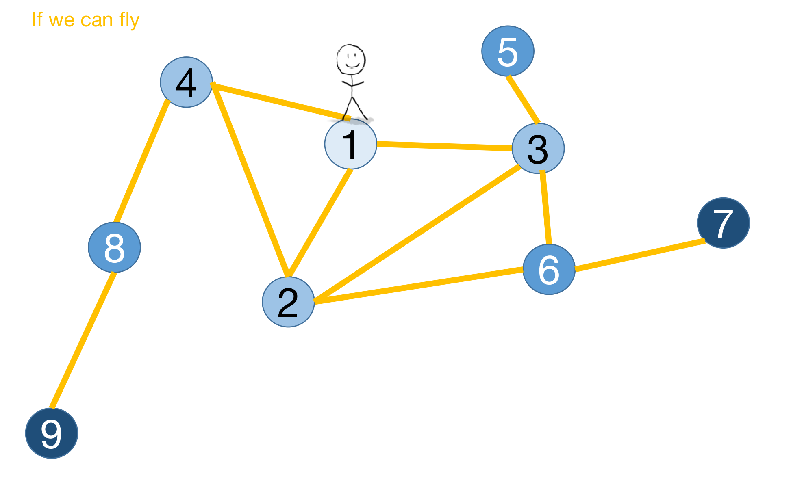
1 위에 서 있고, 정점의 색이 1에서 멀어질수록 짙어집니다. 1에 바로 이어진 2, 3, 4가 옅은 파랑, 거기서 한 걸음 더 나간 5, 6, 8이 중간 파랑, 다시 한 걸음 더 나간 7, 9가 가장 짙은 남색입니다. 번호도 이 순서를 따라 매겨져 있어서, 가까운 정점을 모두 들른 다음에야 그다음으로 가까운 정점으로 넘어간다는 탐색 순서를 그대로 보여 줍니다. 한 길을 끝까지 파고드는 DFS와 달리, 하늘에서 내려다보듯 시작점을 중심으로 고르게 퍼져 나가는 탐색입니다.미로 속을 걷는 탐험가는 한 번에 한 길밖에 갈 수 없었습니다. 하늘을 날 수 있다면 사정이 달라집니다. 시작점 둘레의 가까운 곳을 한꺼번에 살피고, 그다음 가까운 곳으로 범위를 넓혀 갈 수 있습니다.
2.2 조감도로 세상 탐색하기 (Exploring the World with a Bird’s-Eye View)
BFS에서 정점을 구분하는 기준은 시작점에서 몇 걸음에 닿는가입니다.
| 색 | 슬라이드의 설명 |
|---|---|
| 연한 파랑 | 아직 가 보지 않았다 (Not been there yet) |
| 보라 | 0걸음에 닿을 수 있다 (Can reach there in zero steps) |
| 파랑 | 1걸음에 닿을 수 있다 (Can reach there in one step) |
| 초록 | 2걸음에 닿을 수 있다 (Can reach there in two steps) |
| 주황 | 3걸음에 닿을 수 있다 (Can reach there in three steps) |
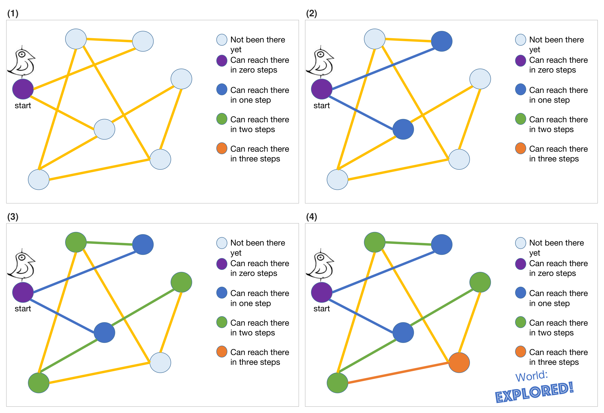
- 한 단계가 끝날 때마다 같은 걸음 수에 닿는 정점이 모두 칠해집니다. 한 정점씩 파고들던 DFS와 달리, BFS는 한 겹씩 나아갑니다.
- 이미 칠해진 정점은 다시 칠하지 않습니다. 셋째 장면에서 맨 위의 초록 정점은 왼쪽 아래의 초록 정점과 이어져 있지만, 둘 다 이미 2걸음짜리로 칠해졌으므로 그 간선은 노란색으로 남습니다.
2.3 의사코드로 세상 탐색하기 (Exploring the World with Pseudocode)
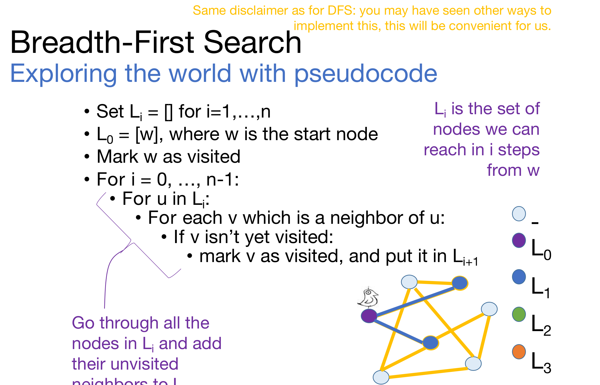
w만 든 \(L_0\)에서 출발해, \(i = 0\)부터 \(n-1\)까지 \(L_i\)의 각 정점 u의 이웃 v를 훑으며 아직 방문하지 않은 v를 방문 표시하고 \(L_{i+1}\)에 넣습니다. 오른쪽 위 보라색 글씨가 \(L_i\)의 뜻을 말합니다 — w에서 \(i\)걸음에 닿을 수 있는 노드들의 집합입니다. 왼쪽 아래 보라색 글씨는 중괄호로 묶은 안쪽 네 줄이 하는 일을 요약합니다 — \(L_i\)의 모든 노드를 훑으며 그 미방문 이웃들을 다음 층에 더한다는 것이며, 이 문장의 끝은 원본에서도 화면 아래로 잘려 있습니다. 오른쪽 아래의 작은 그래프는 시작점과 그 두 이웃까지 칠한 상태이고, 옆의 범례가 색과 층을 짝짓습니다 — 보라 \(L_0\), 파랑 \(L_1\), 초록 \(L_2\), 주황 \(L_3\). 맨 위 노란 글씨는 DFS 때와 같은 단서입니다 — 다른 구현을 본 적이 있을 수 있지만, 이 방식이 앞으로의 논의에 편리하다는 것입니다.Set L_i = [] for i = 1, ..., n # 층을 담을 빈 리스트들
L_0 = [w], where w is the start node # 0걸음에 닿는 곳은 시작점 하나
Mark w as visited
For i = 0, ..., n-1:
For u in L_i: # i번째 층의 정점을 하나씩 꺼내
For each v which is a neighbor of u:
If v isn't yet visited:
mark v as visited, and put it in L_{i+1} # 처음 발견한 이웃은 다음 층으로- \(L_i\)는 시작점 \(w\)에서 \(i\)걸음에 닿을 수 있는 노드들의 집합입니다. 앞 그림의 보라·파랑·초록·주황이 각각 \(L_0, L_1, L_2, L_3\)입니다.
- 안쪽 루프는 \(L_i\)의 모든 노드를 훑으며 그 미방문 이웃들을 \(L_{i+1}\)에 더합니다.
- DFS 때와 같은 단서가 붙어 있습니다 — 다른 방식의 구현을 본 적이 있을 수 있지만, 이 방식이 우리에게 편리합니다.
의사코드에서 눈여겨볼 점이 세 가지 있습니다.
- 상태가 둘뿐입니다. DFS의 진행 중/완료 구분 없이 방문했는지만 기록합니다. 대신 층 번호가 정보를 담습니다.
- 방문 표시는 리스트에 넣는 순간에 합니다. 덕분에 한 정점은 정확히 한 층에만 들어갑니다. 같은 층의 두 정점이 같은 미방문 이웃을 갖고 있어도, 먼저 훑은 쪽이 표시를 남기므로 두 번 들어가지 않습니다.
- 바깥 루프는 \(i = n-1\)까지면 충분합니다. 같은 정점을 두 번 지나지 않는 경로는 간선이 많아야 \(n-1\)개이므로, 그보다 먼 층은 언제나 비어 있습니다.
2.4 BFS도 시작점에서 도달 가능한 모든 노드를 찾습니다 (BFS Also Finds All the Nodes Reachable from the Starting Point)
이 슬라이드는 §1.5의 그림을 그대로 다시 씁니다. 두 덩어리로 된 그래프에서 새가 앉은 시작점 쪽 덩어리만 모두 진한 파랑으로 칠해져 있고, 다른 덩어리는 연한 파랑 그대로입니다. 달라진 것은 막대 인간이 새로 바뀐 것과 아래의 글입니다.
- BFS도 시작점에서 도달 가능한 모든 정점을 찾습니다.
- 그래서 BFS도 모든 연결 요소를 찾는 좋은 방법입니다.
2.5 수행 시간과 유향 그래프로의 확장 (Running Time and Extension to Directed Graphs)
- 그래프 전체를 탐색하려면 연결 요소를 하나씩 탐색합니다.
- DFS와 같은 논증으로, BFS의 수행 시간은 \(O(n + m)\)입니다.
- DFS와 마찬가지로, BFS도 유향 그래프에서 잘 동작합니다.
슬라이드는 보라색 글씨로 이것들을 직접 확인해 보라고 합니다. 확인해 보겠습니다.
수행 시간. 모든 정점은 방문 표시와 함께 정확히 한 층에 들어가므로, 안쪽 루프에서 u로 꺼내지는 것도 정점마다 한 번입니다. 정점 u에서 하는 일은 이웃을 훑는 \(O(\deg(u))\)이므로 §1.8과 똑같은 합이 나옵니다.
\[ \sum_{u \in V} \bigl(O(\deg(u)) + O(1)\bigr) \;=\; O(|E| + |V|) \;=\; O(n + m) \]
층 리스트를 준비하고 바깥 루프를 도는 비용 \(O(n)\)을 더해도 결과는 같습니다.
유향 그래프. DFS 때와 같이 neighbor를 나가는 이웃으로 읽으면 됩니다. 그러면 \(L_i\)는 시작점에서 화살표를 따라 \(i\)걸음에 닿는 정점들이 됩니다.
2.6 왜 너비 우선이라고 부를까요 (Why Is It Called Breadth-First?)
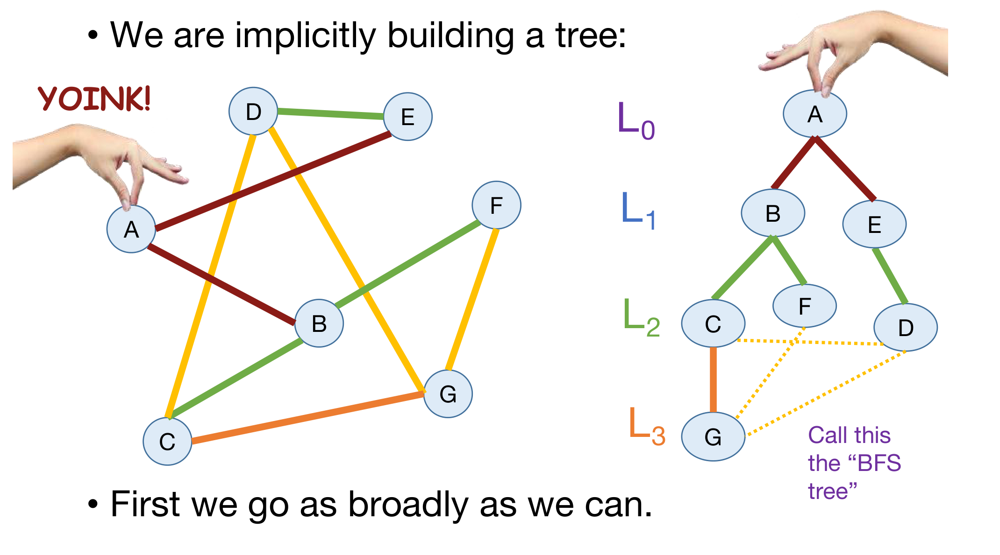
A–B, A–E가 첫 단계, 초록 B–C, B–F, E–D가 둘째 단계, 주황 C–G가 셋째 단계이고, 노란 D–C, D–G, F–G는 새 정점을 찾는 데 쓰이지 않은 간선입니다. 손이 A를 집어 올리면 오른쪽의 트리가 되며, 왼쪽의 기호 \(L_0, L_1, L_2, L_3\)가 각 층을 가리킵니다 — \(L_0 = \{A\}\), \(L_1 = \{B, E\}\), \(L_2 = \{C, F, D\}\), \(L_3 = \{G\}\). 노란 점선은 트리에 들지 못한 세 간선인데, C–D는 같은 층의 두 정점을, F–G와 D–G는 바로 이웃한 층의 두 정점을 잇습니다. 보라색 글씨는 이 트리를 BFS 트리라 부르자고 하고, 아래 글이 이름의 유래를 말합니다 — 먼저, 갈 수 있는 한 넓게 간다. 정점 배치가 같은 §1.7의 DFS 트리가 간선 네 개 깊이까지 한 줄로 늘어졌던 것과 달리, 이 트리는 깊이가 3이고 옆으로 넓습니다(두 그래프는 간선이 하나씩 다릅니다).- 여기서도 우리는 암묵적으로 트리를 짓고 있습니다.
- \(L_i\)의 정점
u가 미방문 이웃v를 발견해 \(L_{i+1}\)에 넣을 때마다,v를u의 자식으로 매답니다. - 이렇게 생긴 트리를 BFS 트리라고 부릅니다.
- \(L_i\)의 정점
- 먼저, 갈 수 있는 한 넓게 갑니다. 그래서 너비 우선입니다.
BFS 트리에서 정점이 놓인 깊이가 곧 그 정점의 층 번호입니다. 그리고 그림의 노란 점선이 보여 주듯, 트리에 들지 못한 간선은 같은 층이나 바로 이웃한 층의 정점만을 잇습니다. 이 성질은 §2.9의 증명에서 다시 쓰입니다.
2.7 사무엘 L. 잭슨의 베이컨 수는? (What Is Samuel L. Jackson’s Bacon Number?)
§0.1의 예습 문제 가운데 첫째가 베이컨 수였습니다. 배우를 정점으로 놓고 같은 영화에 출연한 두 배우를 간선으로 이었을 때, 어떤 배우의 베이컨 수(Bacon number)는 그 배우에서 케빈 베이컨까지 가는 데 필요한 최소 간선 수입니다.
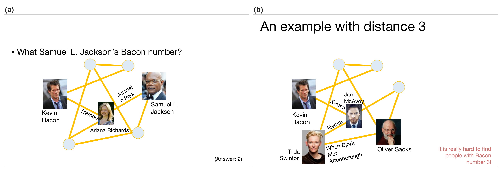
Tremors로 아리아나 리처즈에게, 다시 Jurassic Park로 사무엘 L. 잭슨에게 닿으므로 간선 두 개짜리 경로가 있고, 오른쪽 아래 답이 말하듯 베이컨 수는 2입니다. (b)는 거리가 3인 예입니다. 케빈 베이컨에서 X-men으로 제임스 맥어보이, Narnia로 틸다 스윈턴, When Bjork Met Attenborough로 올리버 색스에게 닿습니다. 오른쪽 아래 붉은 글씨는 베이컨 수가 3인 사람을 찾기가 정말 어렵다고 덧붙입니다. 이름이 없는 연한 파란 원들은 그래프의 나머지 정점이고, 두 그림의 그래프는 앞의 BFS 예제와 같은 모양입니다. 원본 슬라이드에서 (a)의 질문에는 동사가 빠져 있고, 영화 제목 Jurassic Park는 두 줄로 어긋나게 줄바꿈되어 있습니다.- 사무엘 L. 잭슨의 베이컨 수는 2입니다. 케빈 베이컨과 직접 이어져 있지는 않지만, 아리아나 리처즈를 거치면 두 걸음에 닿습니다.
- 거리가 3인 예로 슬라이드는 올리버 색스를 듭니다. 그리고 베이컨 수가 3인 사람을 찾기는 정말 어렵다고 말합니다.
베이컨 수를 구한다는 것은 그래프에서 두 정점 사이의 가장 짧은 경로의 길이를 구한다는 것이고, 이것이 다음 절의 문제입니다.
2.8 BFS의 응용: 최단 경로 (Application of BFS: Shortest Path)
문제와 답 (How Long Is the Shortest Path Between w and v?)
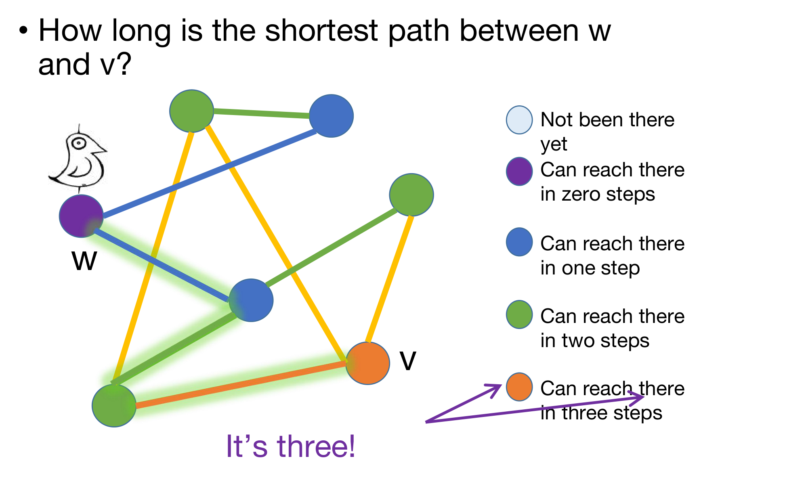
w와 v 사이의 최단 경로는 얼마나 긴가? 그래프는 새가 앉은 w에서 BFS를 끝낸 상태로, 범례대로 보라가 0걸음, 파랑이 1걸음, 초록이 2걸음, 주황이 3걸음에 닿는 정점입니다. v는 주황색이므로 답은 아래 보라색 글씨대로 3이고, 보라색 화살표가 범례의 주황색 항목을 가리킵니다. 연두색으로 빛나게 칠한 세 간선이 실제 최단 경로로, w에서 가운데의 파란 정점, 왼쪽 아래의 초록 정점을 거쳐 v에 이릅니다. 이 경로는 파랑, 초록, 주황 간선을 하나씩 지나는데, 곧 층을 하나씩 내려가는 BFS 트리의 경로입니다. 앞 슬라이드(94번)는 같은 그래프를 색칠하기 전의 모습으로 보여 주며 같은 질문을 던집니다.한 정점에서 다른 모든 정점까지의 거리 (To Find the Distance Between w and All Other Vertices v)
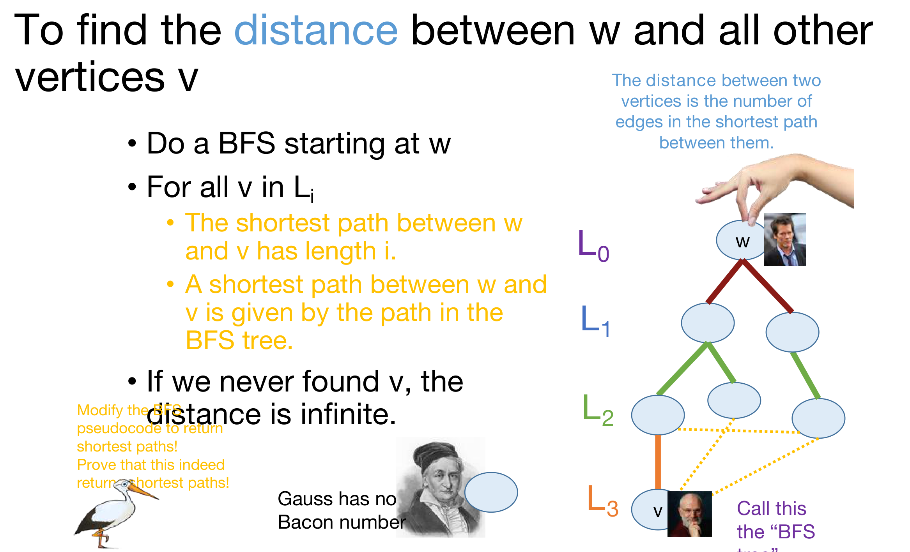
w에서 BFS를 시작하고, \(L_i\)에 속한 모든 v에 대해 w와 v 사이의 최단 경로의 길이는 \(i\)이며, 그 최단 경로 하나는 BFS 트리의 경로로 주어지고, v를 끝내 찾지 못했다면 거리는 무한대입니다. 오른쪽 위 파란 글씨는 용어를 정의합니다 — 두 정점 사이의 거리(distance)는 그 사이의 최단 경로에 있는 간선의 수입니다. 오른쪽 트리는 앞의 BFS 트리에 층 기호를 붙인 것으로, 맨 위 w에는 케빈 베이컨의 사진이, 맨 아래 \(L_3\)의 v에는 올리버 색스의 사진이 붙어 있어 앞 그림의 거리 3을 그대로 옮겨 놓았습니다. 아래 가운데의 외딴 정점과 초상화는 거리가 무한대인 예로, 글이 말하듯 가우스에게는 베이컨 수가 없습니다. 황새 그림 옆의 노란 글씨는 과제입니다 — BFS 의사코드를 고쳐 최단 경로를 반환하게 하고, 그것이 정말 최단 경로임을 증명해 보라는 것입니다. 원본 슬라이드에서 이 과제 글과 본문 글이 겹쳐 있고, 오른쪽 아래의 보라색 글씨는 화면 아래로 잘려 있습니다.두 정점 사이의 거리(distance)는 그 사이의 최단 경로에 있는 간선의 수입니다. 정점 \(w\)에서 BFS를 실행하면 다음이 성립합니다.
- \(L_i\)에 속한 모든 정점 \(v\)에 대해, \(w\)와 \(v\) 사이의 최단 경로의 길이는 \(i\)입니다.
- \(w\)와 \(v\) 사이의 최단 경로 하나는 BFS 트리에서 \(w\)와 \(v\)를 잇는 경로로 주어집니다.
- \(v\)를 끝내 찾지 못했다면, 거리는 무한대입니다.
슬라이드가 남긴 과제 — 의사코드를 고쳐 최단 경로를 반환하게 하기 — 는 BFS 트리를 실제로 기록하면 풀립니다. 정점 v를 \(L_{i+1}\)에 넣을 때 그것을 발견한 u를 v의 부모로 적어 두고, 탐색이 끝난 뒤 목표 정점에서 부모를 따라 시작점까지 거슬러 올라가면 그 경로가 최단 경로입니다.
왜 \(L_i\)의 정점들은 거리가 \(i\)인가 (Why Do the Vertices in \(L_i\) Have Distance \(i\) from \(v\)?)
이 슬라이드에는 수업에서 건너뛰었다는 표시와 큰 줄기만 적은 것(High-level idea!)이라는 표시가 붙어 있습니다. 한 가지 주의할 점은 기호가 앞 슬라이드와 바뀌어 있다는 것입니다. 여기서는 시작 정점이 \(v\)이고 \(w\)가 임의의 정점입니다. 슬라이드의 표기를 그대로 따르겠습니다.
- 귀납법으로 증명합니다.
- \(j\)에 대한 귀납 가정: 모든 \(i < j\)에 대해, \(L_i\)의 정점들은 \(v\)에서의 거리가 \(i\)이다.
- 기저 사례: \(L_0 = \{v\}\)이므로 성립합니다.
- 귀납 단계: \(w\)가 \(L_j\)에 있다고 합시다. \(\text{dist}(v, w) = j\)임을 보이려 합니다.
- \(\text{dist}(v, w) \le j\)입니다. 귀납 가정에 의해 \(L_{j-1}\)에 있는 \(w\)의 부모까지의 거리가 \(j - 1\)이고, 거기에 간선 하나를 더하면 \(v\)에서 \(w\)까지 길이 \(j\)의 경로가 생기기 때문입니다.
- 한편 \(\text{dist}(v, w) \ge j\)입니다. 만약 \(\text{dist}(v, w) < j\)라면 \(w\)는 더 앞선 층에 나타났을 것이기 때문입니다.
- 따라서 \(\text{dist}(v, w) = j\)입니다.
- 결론: \(V\)의 각 정점 \(w\)에 대해, \(w\)가 \(L_j\)에 있으면 \(\text{dist}(v, w) = j\)입니다.
슬라이드가 큰 줄기만 적은 곳은 “더 앞선 층에 나타났을 것이다”라는 대목입니다. 이것을 채우려면 귀납 가정을 조금 강하게 잡아야 합니다.
- 강화한 귀납 가정: 모든 \(i < j\)에 대해, \(L_i\)는 거리가 \(i\)인 정점들의 집합과 정확히 같다. 곧 \(L_i\)의 정점은 거리가 \(i\)이고, 거리가 \(i\)인 정점은 빠짐없이 \(L_i\)에 있습니다.
- \(\text{dist}(v, w) \ge j\)의 확인. \(w\)가 \(L_j\)에 있다면 \(w\)는 그보다 앞선 어느 층에도 없습니다(한 정점은 한 층에만 들어갑니다). 그런데 \(\text{dist}(v,w) = d < j\)라면 강화한 가정에 의해 \(w\)는 \(L_d\)에 있어야 하므로 모순입니다.
- 강화한 가정이 \(j\)에서도 성립함의 확인. 거리가 정확히 \(j\)인 정점 \(x\)를 아무거나 잡고, \(v\)에서 \(x\)로 가는 최단 경로에서 \(x\) 바로 앞의 정점을 \(x'\)이라 합시다. \(\text{dist}(v, x') = j - 1\)이므로 가정에 의해 \(x' \in L_{j-1}\)입니다. BFS가 \(x'\)을 처리할 때 이웃 \(x\)는 이미 방문되어 있거나 이때 \(L_j\)에 들어갑니다. 이미 방문되어 있었다면 \(x\)는 \(L_0, \ldots, L_j\) 가운데 하나에 있는데, \(L_i\) (\(i < j\))의 정점은 거리가 \(i\)이므로 거리가 \(j\)인 \(x\)는 거기 있을 수 없습니다. 어느 쪽이든 \(x \in L_j\)입니다. \(\blacksquare\)
무엇을 배웠나 (What Have We Learned?)
- BFS 트리는 정점 쌍 사이의 거리를 계산하는 데 쓸모 있습니다.
- \(u\)와 \(v\) 사이의 최단 경로를 \(O(m)\) 시간에 찾을 수 있습니다.
여기서 \(O(m)\)은 §1.8의 첫 번째 분석과 같은 뜻입니다. \(u\)에서 시작한 BFS는 \(u\)가 속한 연결 요소만 탐색하고, 연결 요소 하나를 탐색하는 비용은 그 안의 간선 수에 비례합니다.
2.9 BFS의 또 다른 응용: 이분 그래프 판정 (Another Application of BFS: Testing Bipartite-ness)
슬라이드는 이 응용에 시간이 되면(if time)이라는 단서를 붙여 두었습니다.
연습 문제: 물고기 (Exercise: Fish)
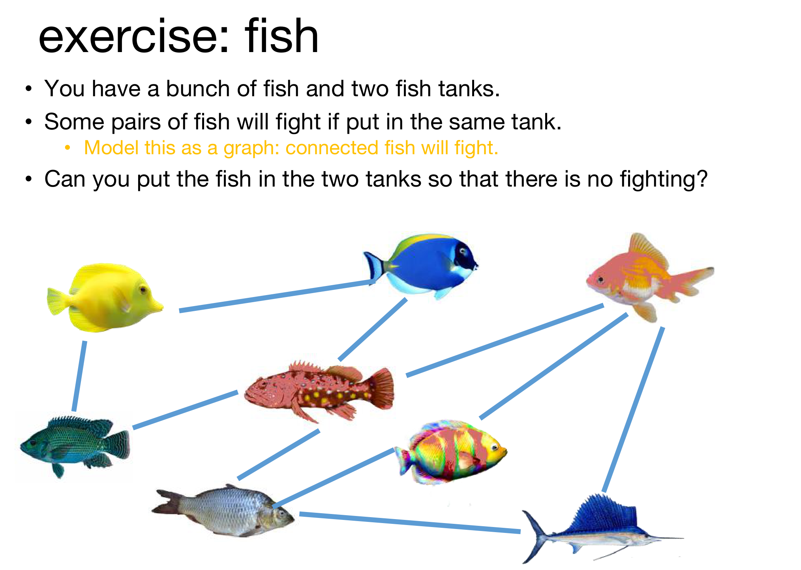
exercise: fish로만 적혀 있습니다. 글이 상황을 설명합니다 — 물고기 여러 마리와 어항 두 개가 있고, 어떤 물고기 쌍은 같은 어항에 넣으면 싸웁니다. 노란 글씨가 이것을 그래프로 옮깁니다 — 이어진 물고기끼리는 싸운다. 그림에서 물고기 여덟 마리가 정점이고, 파란 선 열 개가 같이 두면 싸우는 쌍을 나타내는 간선입니다. 질문은 마지막 줄입니다 — 싸움이 일어나지 않도록 물고기를 두 어항에 나누어 넣을 수 있는가? 간선으로 이어진 두 물고기는 반드시 서로 다른 어항에 들어가야 하므로, 이것은 정점을 두 무리로 나누되 같은 무리 안에는 간선이 없게 하는 문제입니다.- 물고기 여러 마리와 어항 두 개가 있습니다.
- 어떤 물고기 쌍은 같은 어항에 넣으면 싸웁니다.
- 이것을 그래프로 모델링합니다 — 이어진 물고기끼리는 싸웁니다.
- 싸움이 일어나지 않도록 물고기를 두 어항에 나누어 넣을 수 있을까요?
이분 그래프 (Bipartite Graphs)
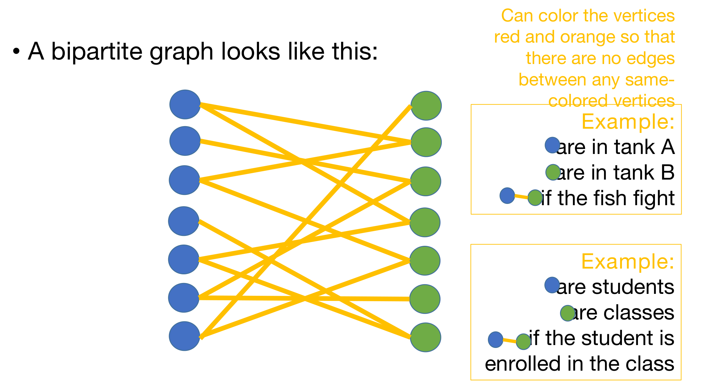
그래프의 정점을 두 가지 색으로 칠하되 같은 색의 두 정점 사이에는 간선이 없도록 칠할 수 있을 때, 그 그래프를 이분 그래프(bipartite graph)라고 합니다.
같은 말로, 정점을 두 무리로 나누어 모든 간선이 한 무리의 정점과 다른 무리의 정점을 잇게 할 수 있는 그래프입니다.
슬라이드의 글은 두 색을 빨강과 주황이라고 부르지만 그림은 파랑과 초록으로 칠해져 있습니다. 색의 이름은 중요하지 않고 색이 둘이라는 점만 중요합니다. 슬라이드가 드는 예는 두 가지입니다.
| 한 색 | 다른 색 | 간선 | |
|---|---|---|---|
| 예 1 | 어항 A의 물고기 | 어항 B의 물고기 | 두 물고기가 싸운다 |
| 예 2 | 학생 | 수업 | 그 학생이 그 수업에 등록했다 |
물고기 문제는 결국 싸움 그래프가 이분 그래프인가를 묻는 문제입니다.
이 그래프는 이분 그래프일까요 (Is This Graph Bipartite?)
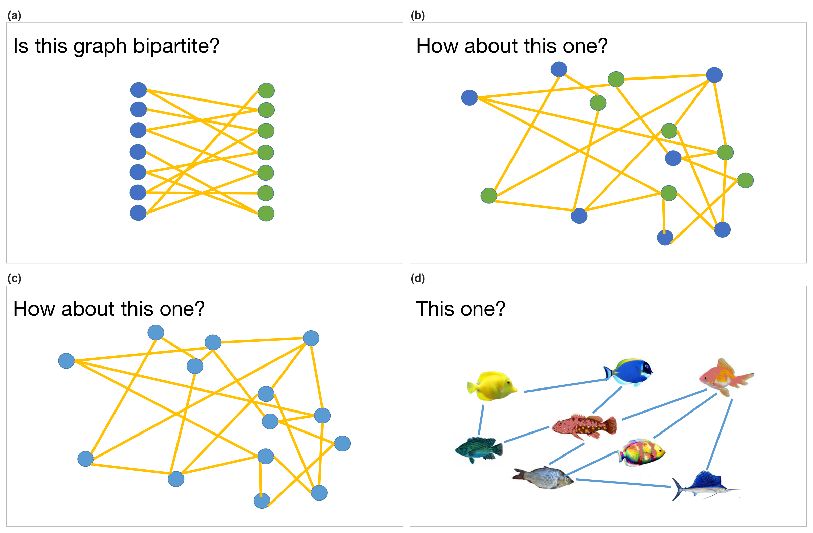
슬라이드는 질문만 던지고 답을 적지 않았습니다. 그림을 비교해 얻은 답을 정리하면 다음과 같습니다.
| 그래프 | 판정 | 근거 |
|---|---|---|
| (a) | 이분 그래프 | 두 열로 나뉘어 있고 모든 간선이 열 사이를 건넌다 |
| (b) | 이분 그래프 | 칠해진 색을 확인하면 모든 간선이 파랑과 초록을 잇는다 |
| (c) | 이분 그래프가 아님 | (b)에 간선 하나가 더해졌는데, 그 간선이 (b)에서 같은 색이던 두 정점을 잇는다 |
| (d) | 이분 그래프 | 이 절의 끝에서 두 어항에 나누어 담은 답이 나온다 |
(c)가 이분 그래프가 아닌 이유는 이 절의 뒤에서 증명할 사실로 설명됩니다. (b)의 그래프는 한 덩어리로 연결되어 있어서 제대로 된 색칠이 색의 이름을 맞바꾸는 것 말고는 하나뿐인데, 그 색칠에서 같은 색인 두 정점을 이어 버리면 홀수 길이의 순환이 생깁니다.
BFS의 응용: 이분 그래프 판정 (Application of BFS: Testing Bipartiteness)
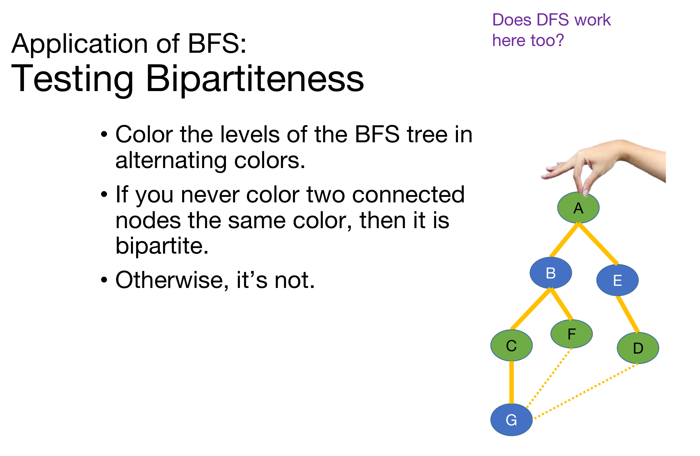
A가 초록, 둘째 층의 B와 E가 파랑, 셋째 층의 C, F, D가 초록, 넷째 층의 G가 파랑입니다. 노란 실선이 트리 간선이고, 노란 점선 F–G와 D–G가 트리에 들지 못한 간선인데, 두 점선 모두 초록 정점과 파란 정점을 잇고 있어 문제가 없습니다. 오른쪽 위 보라색 글씨는 생각해 볼 질문을 남깁니다 — DFS로도 이렇게 할 수 있을까?- BFS 트리의 층을 번갈아 가며 두 색으로 칠합니다. 짝수 번째 층 \(L_0, L_2, \ldots\)는 한 색, 홀수 번째 층 \(L_1, L_3, \ldots\)는 다른 색입니다.
- 이어진 두 노드를 같은 색으로 칠하는 일이 한 번도 없으면, 이분 그래프입니다.
- 그렇지 않으면, 이분 그래프가 아닙니다.
트리 간선은 언제나 이웃한 두 층을 이으므로 저절로 다른 색끼리 이어집니다. 따라서 실제로 확인해야 하는 것은 트리에 들지 못한 간선입니다.
이분 그래프 판정을 위한 BFS (Breadth-First Search for Testing Bipartite-ness)
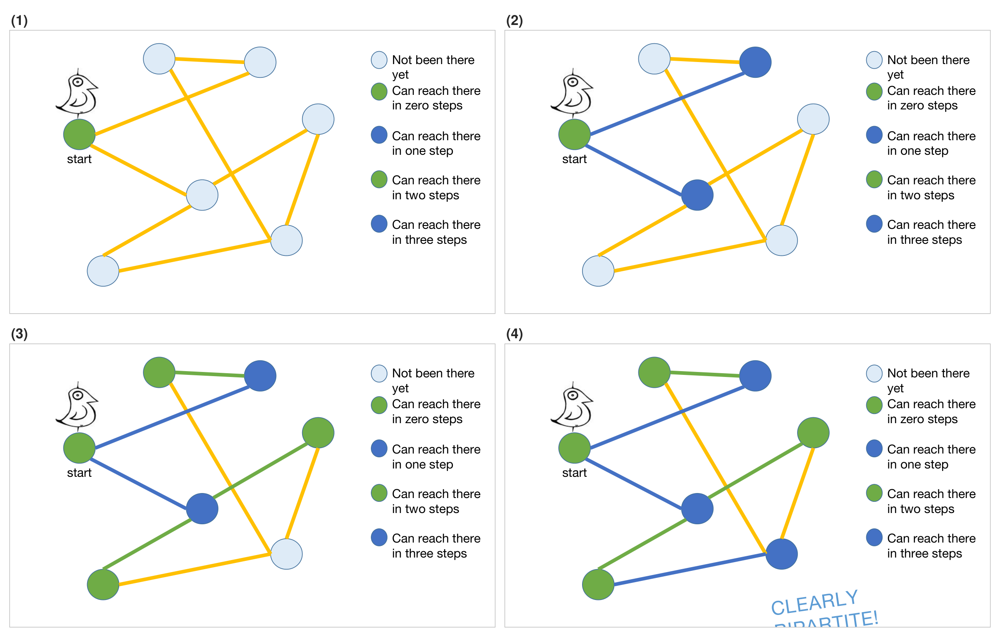
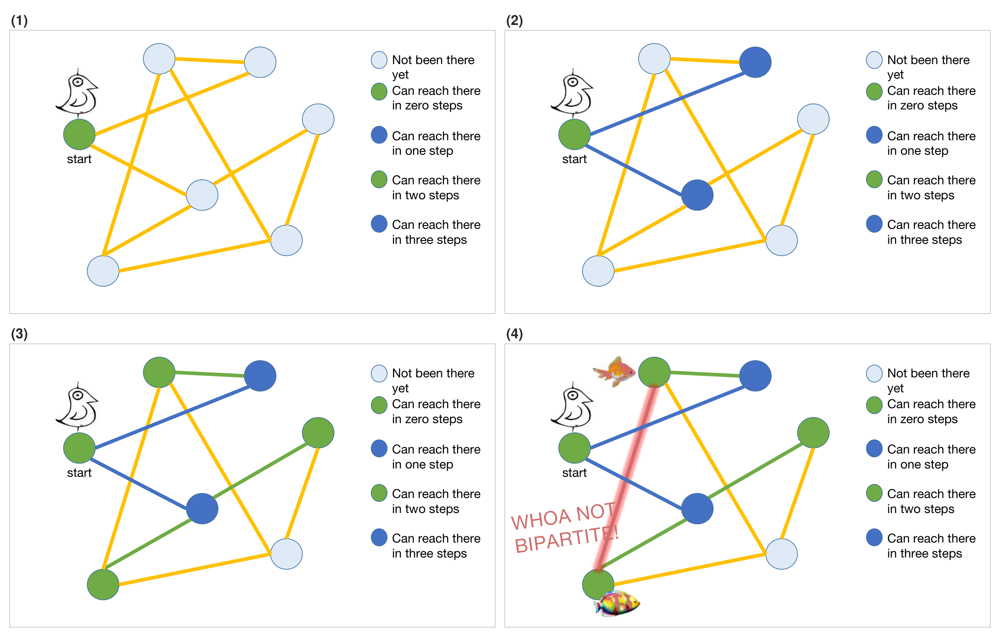
두 그림의 그래프는 간선 하나만 다릅니다. §2.6의 이름으로 말하면 그 간선은 C–D이고, C와 D는 둘 다 \(L_2\)에 있습니다. 같은 층의 두 정점을 잇는 간선이 있으면 두 끝점이 같은 색이 되어 판정이 실패합니다.
잠깐만요 (Hang On Now)
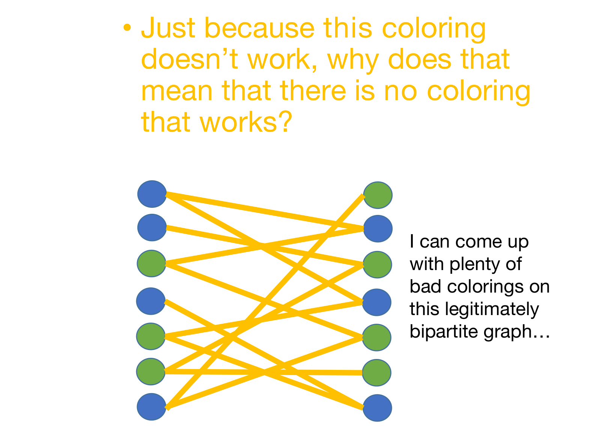
이분 그래프의 정의는 제대로 된 색칠이 하나라도 존재한다는 것입니다. 그러므로 이분 그래프가 아니라고 말하려면 모든 색칠이 실패함을 보여야 합니다.
- 색칠 하나가 성공하면, 그것으로 이분 그래프임이 증명됩니다.
- 색칠 하나가 실패한 것만으로는 아무것도 증명되지 않습니다. 멀쩡한 이분 그래프도 아무렇게나 칠하면 실패합니다.
BFS 판정법이 옳으려면, BFS가 만든 바로 그 색칠의 실패가 모든 색칠의 실패를 뜻한다는 별도의 논증이 필요합니다.
증명이 조금 필요합니다 (Some Proof Required)
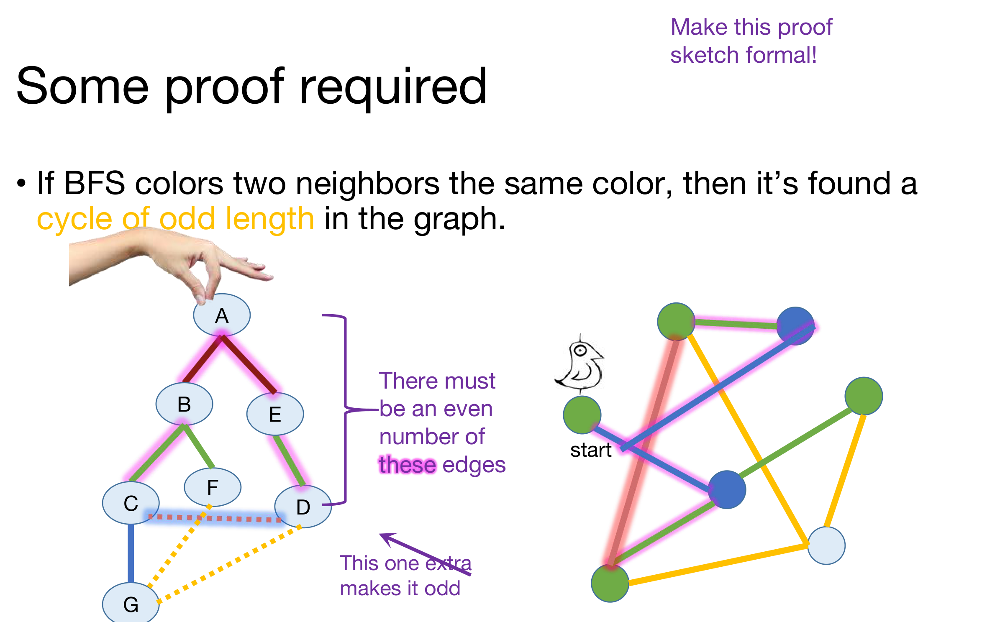
C와 D를 잇는 붉은 점선이 문제의 간선입니다. 분홍빛으로 빛나는 네 간선 A–B, B–C, A–E, E–D는 C와 D에서 각각 공통 조상 A까지 올라가는 트리 경로이고, 보라색 중괄호 옆 글이 말하듯 이런 간선은 짝수 개일 수밖에 없습니다. C와 D가 같은 층에 있으므로 두 경로의 길이가 같기 때문입니다. 아래 보라색 글씨와 화살표는 붉은 점선을 가리키며 이 하나가 더해져 홀수가 된다고 말합니다. 곧 순환 A–B–C–D–E–A의 길이는 \(2 + 2 + 1 = 5\)입니다. 오른쪽은 같은 순환을 원래 그래프 위에 표시한 것으로, 붉게 빛나는 간선이 같은 색 두 정점을 잇는 문제의 간선입니다. 오른쪽 위 보라색 글씨는 이 증명 스케치를 엄밀하게 만들어 보라는 과제이고, 왼쪽 아래 G는 원본 슬라이드에서 화면 아래로 조금 잘려 있습니다.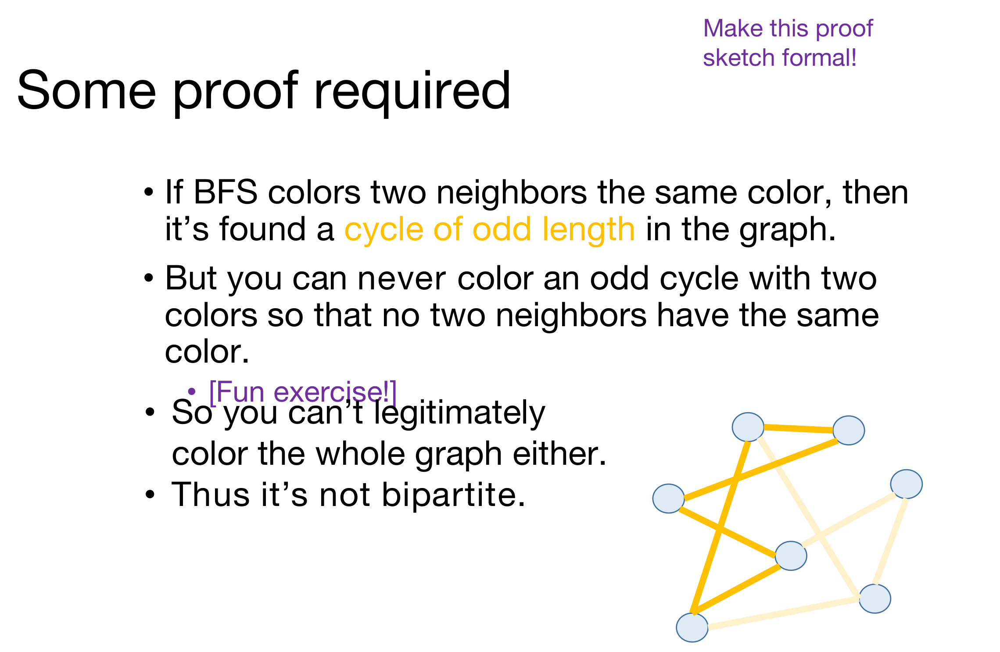
슬라이드의 논증은 세 단계입니다.
- BFS가 두 이웃을 같은 색으로 칠했다면, 그래프에서 홀수 길이의 순환을 찾은 것입니다.
- 그런데 홀수 길이의 순환은 두 색으로 제대로 칠할 수 없습니다.
- 그러므로 그래프 전체도 제대로 칠할 수 없고, 따라서 이분 그래프가 아닙니다.
슬라이드는 이 스케치를 엄밀하게 만들어 보라고 과제로 남겼습니다. 단계별로 채워 보겠습니다.
① 간선은 층을 한 칸까지만 건넙니다. 무향 그래프에서 간선 \(\{x, y\}\)의 두 끝점이 \(x \in L_i\), \(y \in L_j\)이고 \(i \le j\)라고 합시다. BFS가 \(L_i\)의 \(x\)를 처리할 때 이웃 \(y\)는 이미 방문되어 있거나 이때 \(L_{i+1}\)에 들어갑니다. 이미 방문되어 있었다면 \(y\)는 그때까지 만들어진 층 \(L_0, \ldots, L_{i+1}\) 가운데 하나에 있습니다. 어느 쪽이든 \(j \le i + 1\)입니다.
\[\{x, y\} \in E,\;\; x \in L_i,\;\; y \in L_j \quad\Longrightarrow\quad |i - j| \le 1\]
② 같은 색의 두 이웃은 같은 층에 있습니다. 두 이웃 \(x\), \(y\)가 같은 색이라면 층 번호 \(i\), \(j\)의 홀짝이 같습니다. ①에 의해 \(|i - j| \le 1\)인데, 차이가 1이면 홀짝이 다르므로 \(i = j\)입니다.
③ 홀수 길이의 순환이 있습니다. \(x\)와 \(y\)가 모두 \(L_i\)에 있다고 하고, BFS 트리에서 둘의 가장 가까운 공통 조상을 \(a \in L_k\)라 합시다(\(k < i\)). 트리에서 \(a\)에서 \(x\)로 내려가는 경로와 \(a\)에서 \(y\)로 내려가는 경로는 길이가 각각 \(i - k\)이고, \(a\) 말고는 만나지 않습니다. 여기에 간선 \(\{x, y\}\)를 더하면 순환이 되며 그 길이는
\[(i - k) + (i - k) + 1 \;=\; 2(i - k) + 1\]
로 홀수입니다. 슬라이드의 예에서는 \(x = C\), \(y = D\), \(a = A\), \(i = 2\), \(k = 0\)이어서 길이가 5입니다.
④ 홀수 길이의 순환은 두 색으로 칠할 수 없습니다. 순환을 따라 정점에 \(v_1, v_2, \ldots, v_{2t+1}\)이라고 번호를 붙입시다. 이웃한 정점은 색이 달라야 하므로 색은 번갈아 나올 수밖에 없고, \(v_1\)이 초록이면 홀수 번째 정점은 모두 초록입니다. 그러면 \(v_{2t+1}\)도 초록인데, \(v_{2t+1}\)과 \(v_1\)은 순환에서 이웃이므로 같은 색의 두 정점이 이어집니다.
⑤ 그러므로 그래프 전체도 칠할 수 없습니다. 그래프 전체의 제대로 된 색칠이 있다면, 그 색칠을 순환 위의 정점들에만 적용해도 순환의 제대로 된 색칠이 됩니다. ④에 의해 그런 색칠은 없으므로, 그래프는 이분 그래프가 아닙니다. \(\blacksquare\)
반대 방향은 정의 그대로입니다. BFS의 색칠에서 같은 색의 이웃이 하나도 없었다면, 그 색칠 자체가 제대로 된 색칠이므로 그래프는 이분 그래프입니다. 그래프가 여러 연결 요소로 되어 있다면 요소마다 BFS를 새로 시작해 같은 검사를 합니다.
슬라이드가 남긴 질문 — DFS로도 이렇게 할 수 있을까? — 의 표준적인 답은 그렇다입니다. DFS 트리에서 뿌리로부터의 깊이가 짝수인 정점과 홀수인 정점을 다른 색으로 칠하고 모든 간선을 확인하면 됩니다. 무향 그래프의 DFS에서 트리에 들지 못한 간선은 §1.7의 그림처럼 어떤 정점과 그 조상을 잇는데, 두 끝점이 같은 색이라면 깊이의 차가 짝수이므로 그 사이의 트리 경로에 간선 하나를 더한 순환의 길이가 홀수가 됩니다. 나머지 논증은 ④와 ⑤ 그대로입니다.
무엇을 배웠나 (What Have We Learned?)
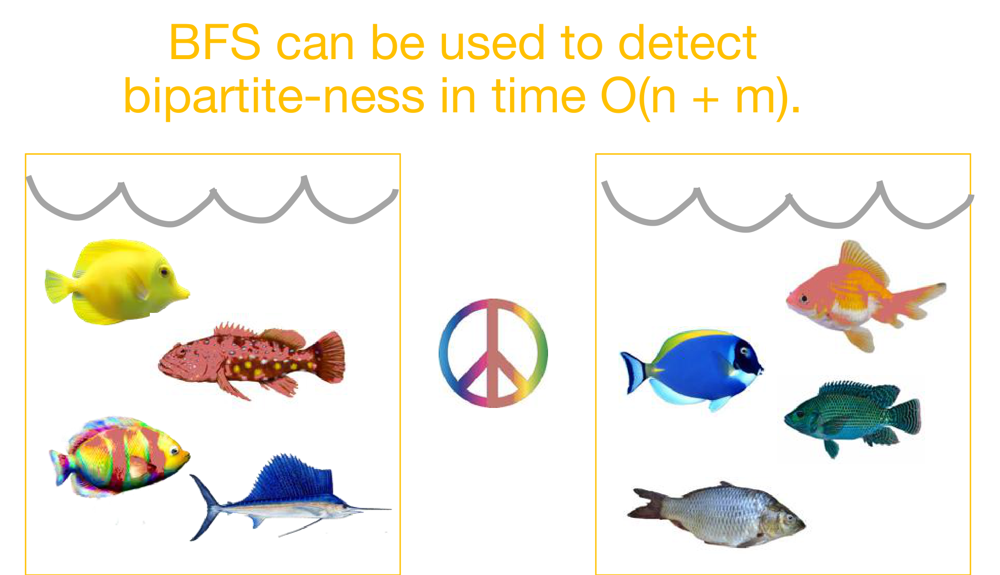
- BFS는 \(O(n + m)\) 시간에 이분 그래프 여부를 판정하는 데 쓸 수 있습니다.
BFS 자체가 \(O(n+m)\)이고, 모든 간선에 대해 두 끝점의 색을 비교하는 일은 간선마다 \(O(1)\), 모두 \(O(m)\)이므로 합쳐도 \(O(n+m)\)입니다.
되짚어보기 (Recap)
슬라이드는 처음의 개요를 다시 띄운 뒤, 두 탐색과 그 응용을 한 장으로 정리합니다.
- 깊이 우선 탐색 (DFS)
- 위상 정렬에 쓸모 있습니다.
- 이진 탐색 트리의 중위 순회에도 쓰입니다.
- 너비 우선 탐색 (BFS)
- 최단 경로를 찾는 데 쓸모 있습니다.
- 이분 그래프 판정에도 쓰입니다.
- DFS와 BFS 둘 다
- 그래프 탐색, 연결 요소 찾기 등에 쓸모 있습니다.
아직 남은 질문 (Still Open)
슬라이드는 다음 몇 차례의 강의에서 다룰 질문을 세 가지 남깁니다.
- 이제 무향 그래프에서는 연결 요소를 찾을 수 있습니다…
- 유향 그래프에서 강한 연결 요소(strongly connected component)를 찾고 싶다면 어떻게 할까요?
- 가중치가 있는(weighted) 그래프에서는 최단 경로를 어떻게 찾을까요?
- 사무엘 L. 잭슨의 에르되시 수(Erdős number)는 얼마일까요?
- (또는, 모든 사람의 “다른 모든 사람까지의 수”를 알고 싶다면?)
첫째 질문은 연결 요소를, 둘째와 셋째 질문은 최단 경로를 이번 강의보다 일반적인 상황으로 넓힌 것입니다. 이번 강의의 BFS는 간선 하나를 한 걸음으로 세므로 간선마다 길이가 다른 그래프에는 그대로 쓸 수 없고, 한 번의 BFS는 한 시작점에서의 거리만 알려 줍니다.
다음 시간 (Next Time)
- 강한 연결 요소 (Strongly Connected Components)
정리하며 (Closing Remarks)
이번 강의의 논증 사슬을 단계별로 압축하면 다음과 같습니다.
| 단계 | 내용 | 근거 |
|---|---|---|
| ① 그래프의 표현 | 그래프 \(G = (V, E)\)를 인접 리스트로 저장하면 공간이 \(O(n+m)\)이고 이웃 질의가 \(O(\deg(v))\)여서, 희소 그래프에 유리하다 | 절충(Trade-offs) 표 |
| ② DFS의 장부 | 정점마다 미방문·진행 중·완료의 상태와 시작·종료 시각을 기록하며, 새 정점을 찾으면 곧바로 들어가고 막히면 직전 갈림길로 돌아간다 | 분필과 실, 의사코드 |
| ③ 탐색의 비용 | 각 정점을 한 번씩 방문하고 그때마다 이웃을 훑으므로, 연결 요소 하나는 \(O(m)\), 그래프 전체는 \(O(n+m)\)이다 | 차수의 합 \(= 2m\) |
| ④ DFS 트리와 시간 구간 | 후손의 구간은 조상의 구간 안에 들어 있고, 조상–후손 관계가 없는 두 정점의 구간은 겹치지 않는다 | 더 일반적인 명제 |
| ⑤ 종료 시각 정리 | DAG에서 간선 \(A \to B\)가 있으면 \(B\)가 \(A\)보다 먼저 끝난다 | 후손인 경우와 아닌 경우 |
| ⑥ 위상 정렬 | 정점을 완료로 표시할 때마다 리스트 맨 앞에 넣으면 종료 시각의 역순이 되고, 모든 간선이 앞에서 뒤로 향한다 | 종료 시각 정리, 두 예제 |
| ⑦ BFS의 층 | 시작점에서 \(i\)걸음에 닿는 정점을 \(L_i\)에 모으며, 방문 표시를 넣는 순간에 하므로 한 정점은 한 층에만 들어간다. 비용은 \(O(n+m)\)이다 | 조감도, 의사코드 |
| ⑧ 최단 경로 | \(L_i\)의 정점은 시작점에서의 거리가 정확히 \(i\)이고, BFS 트리의 경로가 최단 경로이며, 찾지 못한 정점의 거리는 무한대다 | 층에 대한 귀납법 |
| ⑨ 이분 그래프 판정 | 층을 번갈아 두 색으로 칠해 같은 색의 이웃이 없으면 이분 그래프다 | 색칠이 곧 증거 |
| ⑩ 실패의 의미 | 같은 색의 이웃은 같은 층에 있고, 공통 조상까지의 두 경로와 합쳐 홀수 길이의 순환을 이루므로, 어떤 색칠로도 칠할 수 없다 | 간선은 층을 한 칸까지만 건넌다 |
| ⑪ 남은 질문 | 유향 그래프의 강한 연결 요소와 가중치 그래프의 최단 경로는 이번 강의의 도구만으로는 풀리지 않는다 | 아직 남은 질문 |